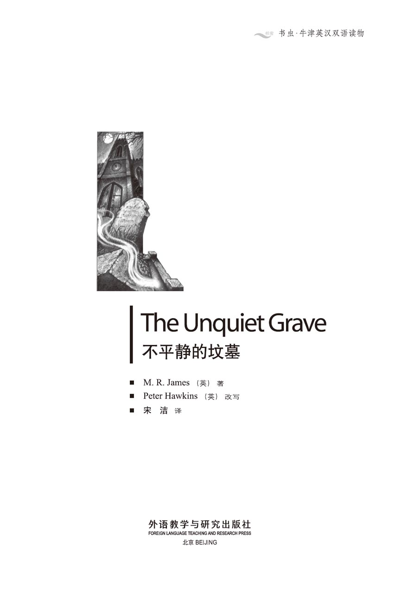
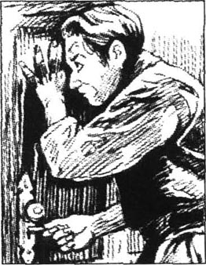
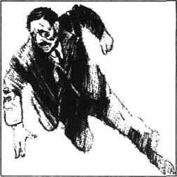
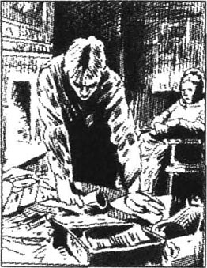
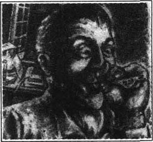
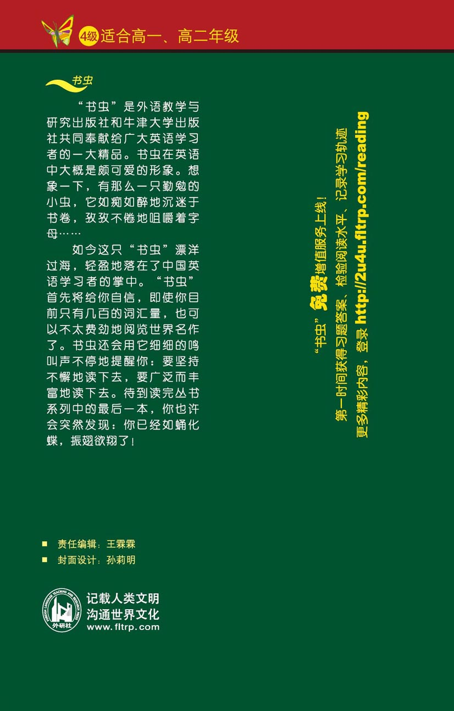

扉页

版权页
京权图字01-97-0348
Originally published by Oxford University Press, Great Clarendon Street, Oxford. © 1996
This edition is licensed for sale in the People's Republic of China only and not for export therefrom.
'Oxford' is a registered trademark of Oxford University Press.
图书在版编目（CIP）数据
不平静的坟墓 = The Unquiet Grave／（英）詹姆斯（James, M. R.）著；（英）霍金斯（Hawkins, P.）改写；宋洁译．—北京：外语教学与研究出版社，1998.1（2014.11 重印）
（书虫·牛津英汉双语读物）
ISBN 978-7-5600-1375-6
Ⅰ．不… Ⅱ．①詹…②霍…③宋… Ⅲ．故事—对照读物—英、汉 Ⅳ．H319.4：I
中国版本图书馆CIP数据核字（98）第01442号
出版人： 蔡剑峰
责任编辑：王霖霖
出版发行：外语教学与研究出版社
社 址：北京市西三环北路19号（100089）
网 址：http://www.fltrp.com
版 次：2001年5月第1版
书 号：ISBN 978-7-5600-1375-6
* * *
凡侵权、盗版书籍线索，请联系我社法律事务部
举报电话：（010）88817519
电子邮箱：banquan@fltrp.com
法律顾问：立方律师事务所 刘旭东律师
中咨律师事务所 殷 斌律师
简介
简介
死去的人并非总是安静地躺在坟墓里。有时他们在这个世界上还有没做完的事情或者想为自己所受的委屈报仇雪恨；或许生活中他们自己也作过恶，即使死了也不得安宁，所以他们一定要回来给活着的人带来麻烦和恐惧。
在这5个故事中，死者可能随时随地以最奇怪的方式到来——到牛津某一学院，威廉斯先生正在那儿饶有兴趣地看着一幅古旧的画作；或者光天化日之下来到年轻的汤姆森先生度假住的一家小旅馆。爱德华·邓宁先生的房间里灯灭了，他伸手去找火柴，黑暗中他的手触到的是什么？乡绅鲍尔斯的妻子和继子要问个问题，可只有鲍尔斯知道答案，你怎么去问一个躺在坟墓里的死人问题呢？当帕金斯教授吹起他拾到的一个很旧的口哨时，是只有风作答，还是有别的东西？一种你见不着、听不见却又难以想象有多么可怕的东西……
蒙塔古·罗兹·詹姆斯（1862-1936）生于肯特郡，先后担任过剑桥大学的国王学院及伊顿公学院长，以其鬼怪故事闻名，这些故事问世后便深受欢迎。
目录
The Picture
The Picture
For several years Mr Williams worked for the museum at the University of Oxford, enlarging its already famous collection of drawings and pictures of English country houses and churches. It is hard to imagine anything less alarming than collecting pictures of houses and churches, but Mr Williams found that even this peaceful work had its unexpected dark corners.
He bought many pictures for the museum from the London shop of Mr J. W. Britnell. Twice a year Mr Britnell sent a list of pictures to all his regular customers, who could then choose which pictures they wanted to look at before deciding whether to buy.
In February 1895 Mr Williams received a list from Mr Britnell with the following letter:
Dear Sir,
I think you might be interested in Picture Number 978 in our list, which I will be happy to send to you if you wish.
J. W. Britnell
Mr Williams turned to Number 978 in the list and found the following note:
Number 978. Artist unknown. Picture of an English country house, early nineteenth century. 25 centimetres by 40 centimetres. ￡20.
It did not sound very interesting and the price seemed high. However, Mr Williams added it to the pictures that he asked Mr Britnell to send to him.
The pictures arrived at the museum one Saturday afternoon, just after Mr Williams had left. They were brought round to his rooms in college so that he could look at them over the weekend. Mr Williams found them on his table when he and his friend, Mr Binks, came in to have tea.
Picture Number 978 showed the front of quite a large country house. It had three rows of windows with the door in the middle of the bottom row. There were trees on both sides of the house and a large lawn in front of it. The letters A.W.F. were written in the corner of the picture. Mr Williams thought that it was not very well done, probably the work of an amateur artist, and he could not understand why Mr Britnell thought it was worth twenty pounds. He turned it over and saw that there was a piece of paper on the back with part of a name on it. All he could read were the ends of two lines of writing. The first said, '—ngly Hall'; the second, '—ssex'.
Mr Williams thought that it would be interesting to see if he could find the name of the house in one of his guidebooks before sending the picture back on Monday morning. Meanwhile, he put the picture on the table, lit the lamp because it was now getting dark, and made the tea.
While they were having tea, his friend picked up the picture, looked at it and said, 'Where's this house, Williams?'
'That's just what I was going to find out,' said Williams, taking a book from the shelf. 'If you look at the back, you'll see it's Something Hall in either Essex or Sussex. Half the name's missing, you see. I don't suppose you recognize the house, do you?'
'No, I don't,' said Mr Binks. 'It's from Britnell, I suppose, isn't it? Is it for the museum?'
'Well, I would buy it if the price was two pounds,' replied Mr Williams, 'but for some reason he wants twenty pounds for it. I can't think why. It's not a very good picture and there aren't even any figures in it to make it more interesting.'
'I agree it's not worth twenty pounds,' said Binks, 'but I don't think it's too bad. The light seems rather good to me and I think there is a figure here, just at the edge, in the front.'
'Let me see,' said Williams. 'Well, it's true the light is quite well done. Where's the figure? Oh, yes! Just the head, in the very front of the picture.'
And indeed there was—right on the edge of the picture—just the head of a man or a woman, who was looking towards the house. Williams had not noticed it before.
'Still,' he said, 'though it's better than I thought at first, I can't spend twenty pounds of the museum's money on a picture of a house I don't even know.'
Mr Binks, who had some work to finish, soon left and Mr Williams spent the time before dinner trying to find the name of the house in his guidebooks.
'If I knew the letter before the "—ngly",' he said to himself, 'it would be easy enough. But there are many more names ending in "—ngly" than I thought.'
Dinner in Mr Williams' college was at seven o'clock and afterwards a few of his friends came back to his rooms to play cards. During a pause in the game Mr Williams picked up the picture from the table without looking at it and passed it to a man named Garwood, who was interested in pictures. Garwood looked at it and said:
'This is really a very fine picture, you know, Williams. The light is very well done, in my opinion, and though the figure is rather unpleasant, it is quite interesting.'
'Yes, isn't it?' said Williams, who was too busy giving drinks to his guests to look at the picture again.
When his visitors had gone, Williams had to finish writing a letter, so it was after midnight before he was ready to go to bed. The picture lay face upwards on the table where Garwood had left it and, as Williams was putting out the lamp, he saw it. For a moment he was too surprised to move, then he slowly picked up the picture and stared at it in horror. In the middle of the lawn, in front of the unknown house, there was a figure where there had been no figure earlier. It was crawling on hands and knees towards the house, and it was covered in a strange black garment with a white cross on the back.
After a second or two Mr Williams took the picture by one corner and carried it to an empty room. There, he locked it, face downwards, in a cupboard, then closed and locked the door of the empty room. He went back to his own room and locked the door behind him. Before going to bed, he sat down and wrote a note describing in detail the extraordinary change in the picture since he had received it.
He was glad to remember that Mr Garwood, who had looked at the picture earlier in the evening, had also seen a 'rather unpleasant' figure. He decided that in the morning he must ask someone to look carefully at the picture with him, and he must try very hard to discover the name of the house. He would ask his neighbour, Mr Nisbet, to have breakfast with him. Then he would spend the morning looking for the house in his guidebooks.
Mr Nisbet arrived at nine o'clock and the two men sat down to breakfast. When they had finished, Mr Williams, feeling both nervous and excited, hurried to the empty room. He unlocked the cupboard, took out the picture, still face downwards, and, without looking at it, went back to his own room and put it into Nisbet's hands.
'Now, Nisbet,' he said, 'I want you to tell me what you see in that picture. Describe it, please, in detail. I'll tell you why afterwards.'
'Well,' said Nisbet, 'I have here a picture of an English country house by moonlight.'
'Moonlight? Are you sure?'
'Oh, yes. The moon is shown quite clearly and there are clouds in the sky.'
'All right. Go on. But I'm sure,' added Williams quietly, 'that there was no moon when I first saw it.'
'Well, there's not much more I can say,' Nisbet continued. 'The house has three rows of windows, five in each row, except at the bottom, where there's a door instead of the middle one and...'
'But what about figures?' said Williams with great interest.
'Figures?' replied Nisbet. 'There aren't any.'
'What? No figure on the grass in front?'
'No. Not a thing.'
'Are you sure?'
'Of course I am. But there's one other thing.'
'What's that?'
'One of the windows on the ground floor, on the left of the door, is open.'
'Is it really? Oh dear! I suppose he's got into the house,' said Williams, with great excitement.
He hurried across to where Nisbet was sitting and, taking the picture from him, saw for himself. It was quite true. There was no figure on the lawn, and there was the open window.
For a moment williams was too surprised to speak, then he sat down at his desk and wrote for a few minutes. When he had finished, he brought two papers across to Nisbet. He asked him to sign the first one, which was Nisbet's own description of the picture, then to read the other one, which was the note Williams had written the night before.
'What can it all mean?' asked Nisbet.
'That's what I must find out,' said Williams. 'Now, there are three things I must do. First, I must ask Garwood exactly what he saw when he looked at the picture last night, then I must have the picture photographed before it goes any further and, thirdly, I must find out where this house is.'
'I can take the photograph for you myself,' said Nisbet. 'But, you know, I think we are seeing something terrible happening here. The question is, has it already happened or is it going to happen? You really must find out where this house is.' He looked at the picture again and shook his head. 'I think you are right, you know. He has got in. I'm sure there will be some trouble in that house.'
'I'll tell you what I'll do,' said Williams. 'I'll show the picture to old Doctor Green. He grew up in Essex and he often goes to Sussex to see his brother who lives there. He's been going there for years. He must know both places quite well.'
'That's a very good idea,' agreed Nisbet. 'But I think I heard Green say that he was going away this weekend.'
'You're right,' said Williams. 'I remember now—he's gone to Brighton for the weekend. I'll leave a note asking him to see me as soon as he returns. Meanwhile, you take the picture and photograph it and I'll see Garwood and ask him what he saw when he looked at it last night.' He paused. 'You know,' he added, 'I don't think twenty pounds is too much to ask for this picture, after all.'
In a short time Williams returned to his room, bringing Mr Garwood with him. Mr Garwood said that when he had looked at the picture the figure was just starting to crawl across the lawn. He remembered that it was wearing a black garment with something white on the back—he was not sure if it was a cross. While he was writing this down, Mr Nisbet returned and said that he had photographed the picture.
'What are you going to do now, Williams?' asked Mr Garwood. 'Are you going to sit and watch the picture all day?'
'No, I don't think we need to do that,' replied Williams. 'You see, there has been plenty of time since I looked at it last night for the creature in the picture to finish what he wants to do, but he has only gone into the house. The window is open and he must still be in there. I think he wants us to see what happens next. Anyway, I don't think the picture will change much during the day. I suggest that we all go for a walk after lunch and come back here for tea. I'll leave the picture on my table and lock the door. My servant has a key and can get in if he wants to, but nobody else can.'
The others agreed that this was a good plan. They also wanted to avoid talking to anyone about this extraordinary picture, knowing what excitement and argument it would cause.
At about five o'clock they came back to Mr Williams' rooms for tea. When they entered the room, they were surprised to find Mr Filcher, the servant, sitting in Mr Williams' armchair and staring in horror at the picture on the table. Mr Filcher had worked in the college for many years and had never before behaved in so unusual a way. He seemed to feel this himself, and tried to jump to his feet when the three men came in.
'I'm sorry, sir,' he said. 'I didn't mean to sit down.'
'That's all right, Robert,' said Mr Williams. 'I was going to ask you some time what you thought of that picture.'
'Well, sir,' replied the servant, 'of course, I don't really understand pictures, but I wouldn't like my little girl to see it. I'm sure it would give her bad dreams. It doesn't seem the right kind of picture to leave lying around. It could frighten anybody—seeing that awful thing carrying off the poor baby. That's what I think, sir. Will you need me any more today, sir? Thank you, sir.'
Filcher left the room and the three men went at once to look at the picture. There was the house as before, under the moon and the clouds. But the window that had been open was now shut, and the figure was once more on the lawn; but not crawling this time. Now it was walking, with long steps, towards the front of the picture. The moon was behind it and the black material of its garment nearly covered its face. The three men were deeply thankful that they could see no more of the face than a high, white forehead and a few long, thin hairs. Its legs beneath the garment were horribly thin, and its arms held something which seemed to be a child, whether dead or living it was not possible to say.
The three friends watched the picture until it was time for dinner but it did not change at all. They hurried back to Williams' rooms as soon as dinner was finished. The picture was where they had left it, but the figure had gone, and the house was quiet under the moon and the clouds.
'Well,' said Mr Williams, 'now we really must try to find where this house is.' They got out the guidebooks and began to work.
It was nearly two hours later when Williams suddenly cried, 'Ha! This looks like it!'
He read aloud from the Guide to Essex that he was holding:
'Anningly. Interesting twelfth-century church containing the tombs of the Francis family, whose home, Anningly Hall, stands just behind the church. The family is now extinct. The last member of the family disappeared very mysteriously in 1802 while still a child. His father, Sir Arthur Francis, a well-known amateur artist, lived quite alone after that until he was found dead in his house three years later, after he had just completed a picture of the Hall.'
As Mr Williams finished reading, there was a knock on the door and Doctor Green came in. He had just returned from Brighton and had found Williams' note. He agreed at once that the picture was of Anningly Hall, which was not far from where he had grown up.
'Have you any explanation of the figure, Green?' asked Williams.
'I don't know, I'm sure, Williams,' Doctor Green replied.
'When I was a boy, some of the old people in Anningly still used to talk about the disappearance of the Francis child. They said that Sir Arthur had a lot of trouble with some of the local people coming onto his land to steal his fish and his birds. He decided to catch them all and have them punished, and, one by one he did, until there was only one left. This was a man called Gawdy whose family had once been rich and important in that part of Essex. In fact, some of them had their tombs in the village church too. However, the family had lost all their land and their money over the years and Gawdy felt rather bitter about it all. For a long time Sir Arthur could not catch him doing anything wrong until one night his men found Gawdy with some dead birds in Sir Arthur's woods. There was a fight and one of the men was shot. This was just what Sir Arthur needed; the judge was all on his side, of course, and poor Gawdy was hanged a few days later. People thought that some friend of Gawdy's stole Sir Arthur's little boy in revenge, to put an end to the Francis family as well. But I should say now, that it looks more as if old Gawdy managed the job himself. Brrrr. I don't like to think about it. Let's have a drink, shall we?'
The story of the picture was told to a few people; some believed it and some did not. Mr Britnell knew nothing about it except that the picture was unusual in some way. It is now in the museum and, although it has been carefully watched, no one has ever seen it change again.
museum n. a building with interesting things for people to visit. 博物馆。
enlarge v. make or become larger. 扩大；增大。
collection n. group of objects that have been collected and that belong together. 收藏品。
alarming adj. causing fear and anxiety. 惊人的；吓人的。
regular adj. happening, coming, doing something again and again at the same time each day, week, etc. 常规的；定期的。
artist n. a person who paints or draws pictures. 画家。
lawn n. grass in a garden, which is cut often to keep it short. 草地；草场。
amateur n. someone who does something (e.g. painting, acting) as a hobby, without receiving money for it. 业余爱好者。
figure n. human form, esp. the appearance and what it suggests. 人形；（尤指）体态；身材。
pause n. a short but noticeable break (in activity, speech). 停顿。
guest n. a person who is invited to visit or stay in a house. 宾客；客人。
crawl v. to move slowly on hands and knees. 爬；爬行。
garment n. something you wear; any piece of clothing. 衣服。
describe v. say what sb. or sth. is like. 描写；描写。
detail n. small, particular fact or item. 细节；琐碎的事。
extraordinary adj. beyond what is usual or ordinary. 非常的；特别的。
nervous adj. easily worried or frightened. 紧张的；担忧的。
excitement n. state of being excited. 兴奋。
description n. saying in words what sb. or sth. is like. 描绘；描写。
photograph 1. v. to take a picture of. 照相。 2. n. a picture. 照片。
creature n. a living being, human or non-human. 动物。
avoid v. keep or get away from; escape. 避免；逃避。
behave v. act; conduct oneself. 表现；举动。
forehead n. the part of the face above the eyes and below the hair. 前额。
contain v. have or hold within itself. 包含；含有。
extinct adj. (of a plant, animal, etc.) that no longer exists. 绝种的；灭种的。
bitter adj. unwelcome to the mind; hard to bear; causing sorrow. 难过的；痛苦的。
hang v. to kill someone by holding them above the ground with a rope around the neck. 绞死。
revenge n. punishment given to someone in return for harm done to oneself. 报复；报仇。
unusual adj. not usual; strange. 异常的。
画作
画作

几年来，威廉斯先生一直在牛津大学博物馆工作，为该馆不断地增加其本已出名的有关英国乡村住房和教堂方面绘画作品的收藏。收集有关住房和教堂的绘画作品本无任何惊人之处，可威廉斯先生却发现即使是这样一项很平静的工作也有其意想不到之处。
他从伦敦J. W. 布里耐尔先生的商店为博物馆买入大量绘画作品。布里耐尔先生一年两次为其所有的老主顾们寄上一份作品目录。这样，这些老主顾们便能够选择一下他们想看看哪些作品，然后决定是否购买。
1895年2月威廉斯先生接到了布里耐尔先生寄来的目录和下面这封信：
亲爱的先生：
我想您可能对我们目录中的第978号作品感兴趣，如果您希望，我很乐意给您寄上。
J. W. 布里耐尔
威廉斯先生翻到目录中的第978号，发现了下面的说明：
第978号，作者不详，画面为一座19世纪早期英国乡村住房，长40厘米，宽25厘米，售价20英镑。
这幅画似乎没多大意思，而且价格似乎也偏高。可威廉斯先生还是在要求布里耐尔先生寄给他的画里加上了它。
一个周六的下午这些作品被送到了博物馆，这时威廉斯先生刚离开。于是这些画又被转到他在学院的住所，以便周末就能让他看到。威廉斯先生和朋友宾克斯先生进屋喝茶时发现了桌子上的那些画。
第978号作品画的是一座乡村大住房的正面。房子有三排窗户，门在底部那排的中间。住房的两侧是树，前面有一大块草地，画的一角写着A. W. F. 几个字母。威廉斯先生觉得这幅画画得不怎么样，可能出自业余画家之手，他不明白为什么布里耐尔先生觉得它值20英镑。他把画翻过来发现后面有张纸，上面写着个不完整的名字。他能看到的只有两行字的结尾，第一行为“——宁利府”，第二行为“——塞克斯”。
威廉斯先生想看看周一上午把画寄回之前能不能在自己的某本旅行指南中找到这座房子的名字，他觉得这样做挺有意思的。他把画放在桌子上，这时天渐渐黑了，于是他点上灯，沏上了茶。
他们喝着茶，他的朋友拿起那幅画看着问道：“威廉斯，这座房子在哪儿？”
“我正想查找一下呢，”威廉斯先生说着从书架上取下一本书。“你看一下背面，上面写着是埃塞克斯或苏塞克斯的什么府。名字少了一半，我想你大概也不认识这座房子吧？”
“不认识，”宾克斯先生说，“我想是布里耐尔寄来的吧？是不是要卖给博物馆？”
“是呀，如果售价是两英镑，我会买的，”威廉斯先生说，“可不知什么原因他要20英镑。我真不知这是为什么。这张画画得并不好，而且画面上连个人影都没有，没有什么看头儿。”
“我也觉得这画不值20英镑，”宾克斯说，“不过我并不觉得它有多糟糕。我认为画中明亮部分似乎还很不错，而且我看这儿有个人，就在前部边上。”
“我看看，”威廉斯先生说，“哦，明亮部分确实处理得不错。人在哪儿？噢，看到了！只有头部，在画面的最前部。”
确实如此——就在画面边缘——只有一个男人或女人的头部，在看这房子。威廉斯此前并没注意到这一点。
“不过，”他说，“虽然它比我刚开始认为的好一点儿，我还是不能把博物馆的20镑花在我居然都不知道的一所房子的画上。”
由于手头还有事要做，宾克斯先生过了会儿就走了。吃饭前威廉斯先生试图在旅行指南中找到这幢房子的名字。
“如果我知道‘——ngly’前面的字母，”他自言自语道，“就容易多了。不过以‘——ngly’结尾的名字比我想像的多得多。”
威廉斯先生所在的学院7点钟开饭，吃完饭他的几位朋友回到他的房间打牌。中间停下来时，威廉斯先生从桌子上拿起那幅画，连看都没看就递给一位名叫加伍德的，这人对绘画很感兴趣。加伍德看了看说：
“您看，威廉斯先生，这幅画确实很不错。我觉得画面的明亮部分处理得很好。虽然人物不那么让人愉快，不过还是挺有意思的。”
“噢，是吗？”威廉斯先生答道，当时他正忙着给客人们倒饮料，顾不上再看那画儿一眼。
客人们走后，威廉斯先生还得写完一封信，所以他准备上床休息时已经是后半夜了。加伍德当时是把那张画画面朝上放在桌子上的。威廉斯先生要关灯时看了它一眼。这时他惊讶得简直不能动了，接着他慢慢把它拿起来，惊恐地盯着看起来。在草坪中间，那座不知名房子的前面原来没有人的地方出现了一个人。它正朝那房子爬着，身上罩着件样子古怪、后背上带着个白十字架的黑外衣。
一两秒钟后，威廉斯先生拎起画的一角把它拿进了一间空屋子。他把画面朝下锁在橱子里，然后把那间空屋子的门关上锁好。回到自己的房间他也随手锁上了门。上床前，他坐下来写了张条，详细描述了他收到那幅画后画面出现的奇特变化。
想起加伍德先生傍晚看这幅画时也发现有个“不那么让人愉快”的人影，他很高兴，于是决定上午一定要再找人一起好好看看这幅画，而且他必须尽力找到这幢房子的名字。他要请邻居尼斯比特先生来和他共进早餐。然后上午的时间还是用来在旅行指南中查找这套房子。
9点钟，尼斯比特先生来了，于是俩人坐下来吃早餐。吃完后，威廉斯先生心情紧张而激动地快步走进那间空屋子，打开橱子拿出那幅画面仍然朝下的画，连看都没看便回到他的房间，把画放进尼斯比特先生手里。
“哎，尼斯比特，”他说，“我想让你告诉我你在这幅画里看到了什么，请详细描述一下。过会儿我会告诉你为什么要这样做。”
“好吧，”尼斯比特说，“画面上是月光下的一座英国乡村住房。”
“月光？你有把握吗？”
“噢，有哇。月亮画得很清晰，天空中还有云。”
“好吧，接着说。可我敢肯定，”威廉斯先生平静地加了一句，“我第一次看时，根本没有月亮。”
“哦，没有什么太多可说的了，”尼斯比特接着说，“这座房子有三排窗户，每排五扇，只有底部那排例外，中间是扇门……”
“人呢？”威廉斯先生带着十分浓厚的兴趣问道。
“人？”尼斯比特答道，“没有任何人呀。”
“什么？前面草地上没有人吗？”
“没有，什么也没有。”
“肯定是这样吗？”
“当然，不过还有一件事。”
“什么事？”
“底层的一扇窗户，门左边那扇，是开着的。”
“真的？天呀！我想他是进了那间屋子了。”威廉斯很兴奋地说。
他快步走到尼斯比特坐的地方，从他手中拿过画亲自看起来。草地上确实没有人，那扇窗户确实开着。
威廉斯一时惊得说不出话来了，他坐在桌旁写了几分钟，写完后递给尼斯比特两份材料，让他在第一份上签字，这份是尼斯比特本人对这幅画的描述，然后又让他看另一份，那是威廉斯前一天晚上的记录。
“这是怎么回事？”尼斯比特问道。
“我也正想弄个明白，”威廉斯先生说，“现在我必须做三件事：首先，我必须问问加伍德昨天晚上他看这幅画时到底看到了什么；然后我必须在它进一步发生变化前把这幅画拍摄下来；第三，我必须弄清楚这座房子到底在哪儿。”
“我可以帮你把这幅画拍摄下来，”尼斯比特说，“可是你知道，我觉得我们看到这里出了什么可怕的事。问题是已经出了事还是就要出事呢？你一定得弄清楚这座房子到底在哪儿。”他又看看那幅画摇了摇头，接着说：“我觉得你说得对，你看他已经进去了。我敢肯定这座房子要出什么麻烦事。”
“告诉你我要干什么吧，”威廉斯说，“我要让格林医生看看这幅画。他在埃塞克斯长大而且经常到苏塞克斯看望住在那里的哥哥。多年来他一直去那儿，一定对这两个地方都很熟悉。”
“这主意很好，”尼斯比特赞同道，“不过我听格林说他这个周末不在。”
“你说得对，”威廉斯先生说，“我想起来了，他去布赖顿过周末了。我要给他留张条，让他一回来就来找我。现在你把画拿去拍照，我去找加伍德问问昨天晚上他在这幅画里看到了什么？”他停了一下，又加了一句：“你知道，不管怎么说，我觉得这幅画要价20英镑并不高。”
威廉斯很快便带着加伍德回到了自己的房间。加伍德先生说他看那画时，那人影刚刚开始向草地爬行。他记得它穿的是件背上有个什么白色东西的黑外衣，他不清楚那东西是不是个十字架。他正写着这些情况时，尼斯比特先生回来了，他说他已经把画拍照下来了。
“威廉斯，下一步你要怎么做呢？”加伍德先生问，“你是不是要整天坐在这儿看这幅画呀？”
“不，我觉得我们没有必要这么做。”威廉斯回答说，“你们看，从昨天晚上我看这画到现在，里面那人满有时间做完他要做的事情，可他只是进了那座房子。窗户开着，他一定还在里面。我觉得他想让我们看看下面会发生什么事情。不管怎么说，我觉得这幅画白天不会有什么太大变化。我提议咱们吃完午饭都去散散步，然后回这儿喝茶。我把这画放在桌子上锁上门。我的仆人有钥匙，如果想进来可以进来，别人谁也进不来。”
另外俩人觉得这个主意不错。他们也不想再谈论这幅十分奇异的画了，因为他们知道这样做会使大家很兴奋且会引起争论。
大约5点钟，他们回到威廉斯先生的房间喝茶，一进屋便惊讶地发现仆人菲尔彻先生正坐在威廉斯先生的扶手椅里，恐惧地盯着桌子上的画看。菲尔彻先生在这所学院里干了多年，还从未如此失态过。他自己似乎也感觉到了这一点，所以3个人进屋时他试图一跃而起。
“对不起，先生，”他说，“我本没想坐下的。”
“没关系，罗伯特，”威廉斯先生说，“我还想什么时候问问你觉得这幅画怎么样呢。”
“哎，先生，”仆人回答道，“当然我不懂什么绘画作品，可我不会让我的小女孩看这幅画的，这画肯定会使她做恶梦。这似乎不是那种可以随便放的画，它会吓坏人的，假如看到这可怕的东西抱走那可怜的小孩子。先生，我是这么想的。今天还有什么事吗？谢谢您了，先生。”
菲尔彻离开了房间，3个人立即上前看那幅画。还是那座笼罩在月光和云雾下的房子，只是以前开着的窗户现在关上了，那人影又出现在草地上，可现在它不是在爬，而是在大步朝着画面的前方走。月亮在它身后，它的黑色外衣几乎把脸都盖上了。3个人很庆幸他们能看见的脸部不过是个高高的白色额头和几根长而稀疏的头发。它那外衣下面露出的腿细得吓人，臂弯里抱着什么东西，好像是个孩子，根本看不出来是死是活。
3位朋友一直到吃饭时间还在看这幅画，可它没发生任何变化。一吃完饭，他们又赶忙回到威廉斯的房间。画还放在原来的位置，可人影不见了，月光和云雾笼罩下的那座房子显得十分平静。
“哎，”威廉斯先生说，“现在我们必须找到这座房子的位置。”他们拿出那些旅行指南开始查找起来。
差不多两个小时以后威廉斯先生突然叫道：“哈！好像就是这个！”
他手中拿着《埃塞克斯指南》一书大声念道：
“安宁利：有趣的12世纪教堂，内有弗朗西斯家族的坟墓，这一家族的住宅安宁利府就位于该教堂后面，这一家族现已灭绝。其最后一名成员于1802年还很小时便神秘失踪。他父亲亚瑟·弗朗西斯爵士，一位很出名的业余画家，后来一直深居简出，直到3年后被人发现死于家中，这时他刚刚完成了一幅描述安宁利府的画作。”
威廉斯先生刚念完这段话，就听到有人敲门，格林医生进来了。他刚从布赖顿回来，看到了威廉斯先生的条子。他当即附和说画上就是安宁利府，这地方离他长大的地方不远。
“格林，你能说说那人影是怎么回事吗？”威廉斯问道。
“我肯定说不清楚，威廉斯，”格林医生回答。“我小时候，安宁利的一些老人还在谈论弗朗西斯家孩子失踪的事儿。他们说亚瑟爵士与一些到他地盘上偷他的鱼和鸟的当地人闹了不少别扭。他决定把他们都抓起来进行惩罚，于是他就一一对他们这么做了，最后只剩下一个人。这个人叫高迪，他的家族一度在埃塞克斯的那一地区很富裕和显赫，而且他们家族中的一些人在村里的教堂里也有坟墓。可过了若干年该家族失去了他们的土地和钱财，高迪对此感到十分痛苦。很长时间以来亚瑟爵士一直抓不住他做坏事，直到一天晚上爵士手下的人在爵士的林子里发现了高迪和一些死鸟。于是他们便打起来，其中一人被射中。亚瑟爵士正需要如此，法官当然完全站在他一边，可怜的高迪几天后便被绞死了。人们认为是高迪的某位朋友为报仇而偷走了亚瑟爵士的小男孩，这样就使弗朗西斯家族也绝了后。可依我看，这事更像老高迪自己干的。嗯，我不想再琢磨这事了。咱们喝一杯吧，好吗？”
这幅画的故事讲给了几个人听，有人信，有人不信。布里耐尔先生除了觉得这画有点不同寻常外，对这个故事一无所知。这幅画现在就放在博物馆里，虽然人们对它观察得十分细致，可没人看到它再有什么变化。
Rats
Rats
'And if you walked through the bedrooms now, you'd see the dirty grey bedsheets rising and falling like the waves of the sea.'
'Rising and falling with what?'
'Why, with the rats crawling underneath them.'
But was it rats? I ask, because in another story it was not. I cannot put a date to the story, but I was young when I heard it, and the teller was old.
It happened in Suffolk, at a place where the coast road climbs a little hill as it travels northwards. At the top of the hill, on the left, stands a tall narrow house built about 1770. Behind it are the gardens and other buildings, and in front lies open heath with a view of the distant sea. The house was once a well-known inn, though I believe few people stay there now.
To this inn came Mr Thomson, a young man from the University of Cambridge, in search of peace and pleasant surroundings in which to study. He found both; the innkeeper and his wife kept a comfortable house, and Mr Thomson was the only guest.
It was fine spring weather and Mr Thomson's days passed very happily. His plan was to stay a month: studying all morning, walking on the heath in the afternoon, and talking with the local people in the bar in the evening.
On one of his walks over the heath he came upon a large white stone with a square hole in the top. No doubt it had once held a post of some kind. He looked around him at the wide, open heath and beyond that, the sea shining in the bright sunlight and decided that the stone had probably once held a sign to guide the local sailors back to their homes.
In the bar that evening he spoke of the stone and his idea that it had, perhaps, once held a sign to guide sailors.
'Yes,' said Mr Betts, the innkeeper, 'I've heard they could see it from out at sea, but whatever was there fell down long before our time.'
'A good thing it did, too,' said one of the villagers. 'It wasn't a lucky sign—that's what the old men used to say. Not lucky for the fishing, I mean.'
'Why ever not?' said Thomson.
'Well, I never saw it myself,' answered the other. 'But those old fishermen had some strange ideas, and I wouldn't be surprised if they pulled it down themselves.'
It was impossible to get anything clearer than this, and people soon began to talk about something else.
One day Mr Thomson decided not to have a walk in the afternoon, but to continue studying. He returned to his room after an early lunch and read on until about three o'clock. Then he put down his book, rose and went out into the passage, thinking that he would have a rest for five minutes. The house was completely silent. He remembered that it was market day and everyone had gone into the local town.
As he stood there, the idea came to him to look at the four other rooms along the passage. He was sure that the Bettses would not mind. The room opposite his was big but had no view of the sea. The next two were both smaller than his with only one window each—his had two. He walked down the passage to the door at the end and found that it was locked. Thomson decided that he must see inside that room; perhaps the key of his room would unlock the door. It did not, so he fetched the keys from the other three rooms and tried them. One of them fitted the lock and he opened the door.
The room had two windows looking south and west, and hot bright sunshine filled the room. Here there was no carpet, only wooden floorboards; no pictures, no furniture, except a bed in the farther corner—a metal bed covered with a bluish-grey blanket. You could not imagine a more ordinary room, but there was something that made Thomson close the door very quickly and very quietly behind him, and then lean against the wall in the passage, trembling all over.
Under the blanket someone lay, and not only lay, but moved. It was certainly some one and not some thing, because the shape of the head and body was clear under the blanket. However, it was all covered, and no one lies with covered head except a dead person; and this was not dead, not truly dead, because it was moving and shaking.
Thomson tried to tell himself that he was imagining things, but on this bright sunny day that was impossible. What should he do? First, lock the door again. With a trembling hand he turned the key in the lock, but as he did so, it made a little noise, and at once soft footsteps were heard coming towards the door. Thomson ran to his room and locked himself in, although he knew it was useless. How could doors and locks stop what he suspected? He stood listening for several minutes, but no sound came from the passage.
Now he could not think what to do. He wanted to pack his bags and leave the inn at once, but only that morning he had told Mr and Mrs Betts that he would stay for another week. If he left suddenly, they would surely guess the reason. Then he thought, either the Bettses knew about the creature in that room but still stayed in the house, or they knew nothing about it. Perhaps they knew just enough to make them keep the room locked, but not enough to make them leave the house. In any case, they did not seem to be afraid of whatever was in that room, so why should he be afraid of it? He decided to stay another week as he had arranged.
As the days passed, Thomson listened hard for sounds from the room at the end of the passage, but he heard nothing. Of course he could not ask Mr or Mrs Betts about it, and he did not think he could ask anyone else. However, he wanted very much to find some kind of explanation, so he decided that he would try to see inside the locked room once again before he left the inn.
He made a simple plan. He would arrange to leave by an afternoon train and would have his luggage put on the cart for the station. Then, just before leaving, he would go back upstairs to make sure that he had not left anything behind. But, instead of going to his own room, he would go to the other. He put oil on the key to make it easier to open the door quietly.
His last day arrived. After lunch his luggage was taken downstairs and put on the cart for the station. Mr and Mrs Betts came to the front door to say goodbye. Thomson thanked them for making him so comfortable and they thanked him for staying with them. Then, as he had planned, Thomson said:
'I'll just check that I haven't left a book or anything in my room. No, please don't worry, I can do it myself.'
He hurried up the stairs to the locked room, turned the key quietly and opened the door. He almost laughed aloud. Leaning, or perhaps sitting, on the edge of the bed was—nothing more than an ordinary scarecrow! A scarecrow out of the garden, of course, just put away in the empty room...
Yes; but suddenly amusement stopped. Do scarecrows have bony feet? Do their heads roll from side to side on their shoulders? Have they got heavy metal chains around their necks? Can they get up and move across the floor, with rolling head and arms close at their sides... and shake with the cold?
Thomson shut the door with a bang, jumped down the stairs and fell in a faint at the door of the inn. When he became conscious again, Mr Betts was standing over him with a glass of whisky and a serious face.
'You shouldn't do it, sir,' said Betts. 'You shouldn't go looking into people's secrets, especially when they've done their best to make you comfortable.'
Thomson said that he was very sorry but the innkeeper and his wife found it hard to accept his apologies.
'Who knows what damage it will do to the good name of the inn?' said Mr Betts, and his wife agreed.
At last Thomson managed to make Mr and Mrs Betts believe that he would not say anything about what he had seen. By that time he had missed his train but he decided to go into town and spend the night at the Station Hotel.
Before he went, Mr Betts told him what little he knew.
'They say he used to be the innkeeper here many years ago, and he worked with the thieves who robbed and murdered travellers on the heath. That's why he was hanged—in chains, they say, up at the gallows on that white stone you saw. Yes, the fishermen pulled the gallows down, I believe, because they saw it out at sea, and they said it kept the fish away. We heard all this from the people who sold us the inn. "You keep that room shut up," they said, "but don't move the bed out, and you'll find there won't be any trouble." And we haven't had any trouble. He hasn't once come out into the house, though who knows what he might do now? I've never seen him myself, and I don't want to. But I do hope you'll keep it a secret, sir. If word gets out, people won't want to come and stay here, will they?'
The promise of silence was kept for many years. I heard the story when Mr Thomson, now an old man, came to stay with my father. I was told to take him up to his room, but when we got there, Mr Thomson stepped forward and threw the door open himself. He stood there in the doorway for some moments, looking carefully into every corner of the room.
Then he turned to me. 'I beg your pardon,' he said. 'A strange way to behave, I know. But there is a very good reason for it.'
A few days later I heard what the reason was, and you have heard it now.
heath n. open wild land. 荒地。
inn n. a pub or a small old hotel. 旅馆。
surroundings n. everything around and about a place; conditions that may affect a person. 周围的事物；环境。
passage n. a narrow way through sth., with walls on both sides. 通道；走廊。
unlock v. unfasten the lock of. 打开……的锁。
floorboard n. plank of a wooden floor. 地板。
ordinary adj. normal; usual; average. 正常的；通常的；普通的。
lean v. to rest part of the body on or against something. 倚；靠。
suspect v. feel doubt about. 怀疑；觉得可疑。
pack v. get ready for a journey by putting things into a box, bag, etc. 整理行装。
arrange v. make plans in advance. 筹备；安排。
cart n. a wooden vehicle pulled by horses. 马车。
scarecrow n. a figure made out of sticks and old clothes, and put in a field to frighten birds. 稻草人（置于田中用于吓走鸟的假人）。
amusement n. the state of being amused; enjoyment. 快乐；享受。
roll v. to move from side to side. 摇晃；摇动。
faint n. losing consciousness. 昏厥；不省人事。
conscious adj. able to understand what is happening; awake. 有意识的；神智清醒的。
murder v. kill (a human being) unlawfully and on purpose. 谋杀。
chain n. metal rings joined together in a long 'rope'. 链子；链条。
gallows n. a wooden post on which criminals were killed by hanging. 绞架。
doorway n. opening into which a door fits. 门口。
老鼠
老鼠

“假如你现在走过卧室，就会看到那脏兮兮的灰床单像海浪一样起伏着。”
“随着什么起伏？”
“噢，随着下面爬行的老鼠。”
是老鼠吗？我问道，因为在另一个故事中并不是老鼠。我也说不出这故事讲的是什么时候的事，只是听这个故事时我还年轻，讲故事的人已经老了。
故事发生在萨福克郡，一条沿海岸向北延伸的路翻过一座小山的地方。山顶上左侧矗立着一幢大约建于1770年的高高的窄房子。房子后面是些花园和其他建筑物，前面是一片能够看到远处大海的开阔荒地。这房子曾是一家很有名的旅店，尽管我知道现在已经很少有人住了。
汤姆森先生，一位剑桥大学的年轻人来到这家旅店，想寻找一份宁静和一种读书的愉悦环境。两者他都找到了。旅店老板和妻子把房子收拾得很舒适，而汤姆森先生又是唯一的客人。
当时正值天气晴好的春天，汤姆森先生过得很愉快。他计划待一个月：整个上午读书，下午去荒地里散散步，晚上和酒吧里的当地人聊聊天。
一次他在荒地里散步，发现了一块顶部有个方形洞的白色大石头。这肯定曾安插过什么标杆。他看看四周宽敞而开阔的荒地和远处明亮的阳光下闪着波光的大海，判定这块石头可能曾安插用于指引当地海员回家的标志。
晚上在酒吧里，他谈到那块石头和他觉得那石头可能曾安插用于指引海员的标志的想法。
“是的，”旅店老板贝茨说，“我听说他们在海上就能看到它，可插在那里的东西很久以前就倒了。”
“那倒是件好事，”其中一位村民说，“那不是什么吉祥的标志，老人们过去经常这么说。我是说对捕鱼来说不吉祥。”
“为什么呢？”汤姆森问道。
“噢，我从来没有亲眼见过那东西，”那村民回答，“可那些老渔夫们的想法很怪，如果是他们亲手毁掉了它，我也不会感到奇怪。”
不可能找到比这更明确的答案了，人们很快就开始谈起别的事儿了。
一天，汤姆森先生决定下午接着看书，不去散步。他早早吃完午饭回到房间里，继续看书看到大约3点。然后他放下书站起身，走出房间进了走廊，想休息5分钟。整座房子安静至极。他想起今天是赶集的日子，人们都到镇上去了。
他站在那里，突然想到要看看走廊两边的其他4个房间。他觉得贝茨夫妇肯定不会介意。他对面的那间屋子很大，但是看不到海。相邻的两间都比他的房间小，而且都只有一个窗户——他的房间有两个窗户。他走到走廊尽头的那个房门前，发现门锁着。他决意一定要看看这间屋子里面是什么样的；也许自己房间的钥匙能打开这个门。试了试打不开。于是他又从另外3个房间拿来钥匙试，其中一把打开了锁，他开了门。
这房间有两面窗户分别朝南朝西，明亮而炙热的阳光洒满了房间。屋里没有地毯，只有木头地板；没有画，没有家具，只在远处墙角有一张床，一张上面盖着条带点儿蓝色的灰毯子的金属床。这间屋子再平常不过了，却有某种情况使汤姆森非常迅速而又轻轻地关上门，然后倚在走廊的墙上浑身发起抖来。
原来毯子下面躺着个人，不仅是躺着，而且还在动。肯定是人而不是东西，因为毯子下面头部和身体的轮廓很清晰。然而却从头到脚都盖着，除非死人才盖着头躺着，而这人没有死，没有真死，因为它还在动并且在发抖。
汤姆森试图告诉自己他在胡思乱想，可在这光天化日之下这又是不可能的。他该怎么办呢？首先再锁上门。他的手颤抖着用钥匙在锁眼里转动着，这时出了点儿声音，他马上便听到有轻轻朝门口走来的脚步声。虽然他知道这么做无济于事，汤姆森还是跑回自己的房间把自己锁在了里面。关上门上了锁又怎么能挡住他怀疑的东西呢？他站在那里听了几分钟，走廊里没有任何声音。
他现在想不出来该怎么做。他想收拾起东西马上离开这家旅店，可就在那天早上他才告诉贝茨夫妇他要再待上一周。如果他突然走了，他们肯定会猜测其中的原因。这时他想或许贝茨夫妇知道那房间里的东西却仍住在这套房子里，或许他们对此一无所知。可能他们知道的情况仅使他们将那间屋子锁起来，却不至于使他们离开这座房子。无论如何，不管那屋子里有什么东西，他们似乎并不害怕，他为什么要怕呢？于是他决定按原来自己的安排再待上一周。
时间一天天过去，汤姆森仔细听着走廊尽头那间屋子有什么声音，可什么也没听到。他当然不能去问贝茨先生或夫人，而且觉得这事也不能去问别人。可是他却极想弄清此事，于是便决定离开这家旅馆前再找机会去看看那锁着的屋子里面的情况。
他简单地计划了一下：他安排坐下午的火车走并且把行李放在送站的马车上，然后就在临走前再回楼上看看是不是忘了什么东西，这时他不回自己的房间而是到那间屋子里去。他在钥匙上抹了点儿油，这样开起门来声音会小一点儿。
最后一天到了。吃完午饭，他的行李被拿下楼放在了送站的马车上。贝茨夫妇来到前门和他道别。汤姆森感谢他们让他住得很舒服，夫妇俩也对他住在他们这儿表示感谢。接着，汤姆森照计划说：
“我再去看看有没有把书或什么东西忘在房间里。不过没事，我自己去看看就行了。”
他快步上楼来到那间锁着的屋门前，轻轻转动钥匙打开了门。他几乎要大声笑出来。斜靠在或者说坐在床边的——只不过是个普普通通的稻草人！一个从花园里搬出来的稻草人，只不过被放在了这间空屋子里……
可突然他不再觉得这事情好玩了。稻草人有瘦骨嶙峋的双脚吗？头能在肩膀上晃动吗？脖子上会有沉重的金属链子吗？能从床上起来，摇晃着头、胳膊紧贴着身体两侧在地上走动……而且冻得发抖吗？
汤姆森砰地一声关上门，从楼梯上跳下来，随即昏倒在旅店门口。他醒过来时，贝茨先生正端着杯威士忌严肃地站在他身边。
“先生，你可不该这么做，”贝茨说，“你不应该窥探别人的秘密，尤其是尽力使你舒服的人家。”
汤姆森说他很抱歉，可旅店老板和妻子觉得难以接受他的道歉。
“谁知道这件事会对我们旅店的声誉造成什么损害呢？”贝茨先生说，他妻子也在附和着。
最后汤姆森还是让贝茨夫妇相信了他不会把自己见到的一切说出去。这时他已经错过了那趟火车，可他决定去镇上，在火车站旅馆过夜。
他临走前，贝茨先生给他讲了自己知道的一点儿情况。
“人们说多年前他是这家旅店的老板，和那些在荒原上抢夺和谋杀旅行者的小偷们同谋一起干坏事，所以被人——据说用链子——吊死在你看见的那块白石头上的绞架上。是啊，我想后来那些渔夫们把绞架拆了下来，因为他们在海上就能看见，他们说鱼一见到它就跑。这些都是从卖给我们旅店的人们那里听来的。‘你们把那间屋子的门窗关好，’他们说，‘别把床搬出来，就不会有什么麻烦。’我们确实也没遇到什么麻烦。虽然谁也不知道现在他会干什么，但是此前他从来没出来过。我从来没看见过他，而且也不想看见。不过，先生，我确实希望你能保守这个秘密。如果传出去，人们就不会想到这儿来住了，对吧？”
多年来汤姆森先生一直信守诺言，没有将此事说出来。如今他已经年迈，来看望我的父亲我才听到了这个故事。我奉命带他上楼到他的房间去。一到那儿，他便走上前去自己用力推开了门。他在门口站了会儿，仔细看了看房间的每一个角落。
接着他转向我。“对不起，”他说，“这么做很怪，却是很有理由的。”
几天后我听说了其中的理由，您现在也听说了。
Casting the Runes
Casting the Runes
15th April 1902
Dear Mr Karswell
I am returning your paper on 'The Truth of Alchemy', which you have kindly offered to read at our next club meet ing. Unfortunately, we do not feel able to accept your offer.
W. Gayton, Secretary
18th April 1902
Dear Mr Karswell
I am afraid that I am not able to arrange a meeting with you to discuss your offer to read a paper on alchemy. However, the club considered your offer most carefully, and we did not refuse it until we had asked for the opinion of an expert in these matters.
W. Gayton, Secretary
20th April 1902
The Secretary writes to in form Mr Karswell that it is impossible for him to give the name of any person or persons who were asked for an opinion on Mr Karswell's paper on alchemy. The Secretary also wishes to say that he cannot reply to any further letters on this matter.
'And who is Mr Karswell?' asked the Secretary's wife. She had called at his office and had just picked up and read the last of these letters.
'Well, my dear,' replied her husband, 'just at present Mr Karswellis a very angry man. All I know about him is that he's rich, lives at Lufford Abbey in Warwickshire, and considers himself to be an alchemist. And I don't want to meet him for the next week or two. Now, shall we go?'
'What have you been doing to make him angry?' asked the Secretary's wife.
'The usual thing, my dear. He sent us a paper which he wanted to read at our next meeting. We showed it to Edward Dunning—almost the only man in England who knows about these things—and he said it was no good, so we refused it. Now Karswell wants to see me about it and to find out whose opinion we asked for. Well, you've seen my reply to that. Of course, you mustn't say anything about it to anyone.'
'You know very well that I would never do a thing like that. Indeed, I hope he doesn't discover that it was poor Mr Dunning.'
'Why do you say "poor" Mr Dunning?' said the Secretary. 'He's a very happy man and quite rich, I believe. He has a comfortable home and plenty of time to spend on his hobbies.'
'I only meant that I would be sorry for him if Mr Karswell discovered his name and made trouble for him.'
'Oh yes! He would be poor Mr Dunning then,' agreed her husband.
* * *
The Secretary and his wife were lunching with friends that day, a Mr and Mrs Bennett, who came from Warwickshire. Mrs Gayton decided to ask them if they knew Mr Karswell. However, before she could do so, Mrs Bennett said to her husband:
'I saw Mr Karswell this morning. He was coming out of the British Museum as I was driving past.'
'Did you really?' said her husband. 'I wonder what brings him up to London.'
'Is he a friend of yours?' asked the Secretary, smiling at his wife.
'Oh no!' said Mr and Mrs Bennett together.
'He's one of our neighbours in Warwickshire,' explained Mrs Bennett, 'but he's not at all popular. Nobody knows what he does with his time and they say he believes in all kinds of strange and unpleasant things. If he thinks you have been impolite to him, he never forgets it, and he never does any thing kind for his neighbours.'
'But, my dear,' said her husband, 'you're forgetting the Christmas party he gave for the children.'
'Oh no, I'm not,' replied his wife. 'That's a good example of what I mean.' She turned to the Secretary and his wife. 'The first winter he was at Lufford this horrible man invited all the village children to a Christmas party at his house. He said that he had some of these new moving pictures to show them. Everyone was rather surprised because they thought that he didn't like children; he used to be very angry if any of the village children came on to his land. However, the children all went and a friend of ours, Mr Farrer, went with them to see that everything was all right.'
'And was it?' asked the Secretary.
'Indeed it was not!' replied Mrs Bennett. 'Our friend said it was obvious that Mr Karswell wanted to frighten the children to death, and he very nearly did so. The first film was "Red Riding Hood", and the wolf was so terrible that several of the smaller children had to leave the room. The other films were more and more frightening. At the end Mr Karswell showed a film of a little boy in the park surrounding Lufford Abbey—every child in the room could recognize the place. There was a horrible creature in white following the little boy. At first you could see it hiding in the trees, then it became clearer and clearer and at last it caught the little boy and pulled him to pieces. Our friend said that it gave him some very bad dreams, so you can imagine how the children felt. Of course, this was too much and Mr Farrer told Karswell that he must stop it. All Mr Karswell said was: "Oh! The dear children want to go home to bed, do they? Very well, just one last picture."
'And then he showed a short film of horrible creatures with wings and lots of legs. They seemed to be crawling out of the picture to get among the children. Of course, the children were terribly frightened and they all started screaming and running out of the room. Some of them were quite badly hurt because they were all trying to get out of the room at the same time. There was the most awful trouble in the village afterwards. Several of the fathers wanted to go to Lufford Abbey and break all the windows, but the gates were locked when they got there. So you see why Mr Karswell is not one of our friends.'
'Yes,' agreed her husband. 'I think Karswell is a very dangerous man. I feel sorry for anyone who makes an enemy of him.'
'Is he the man,' asked the Secretary, 'who wrote a History of Witchcraft about ten years ago?'
'Yes, that's the man,' replied Mr Bennett. 'Do you remember what the newspapers said about it?'
'Yes, I do,' said the Secretary. 'They all said that it was a really bad book. In fact, I knew the man who wrote the sharpest report of them all. So did you, of course. You remember John Harrington? He was at Cambridge with us.'
'Oh, very well indeed. But I had heard nothing of him between the time we left university and the day I read about his accident in the newspaper.'
'What happened to him?' asked one of the ladies.
'It was very strange,' said Mr Bennett. 'He fell out of a tree and broke his neck. The mystery was why he had climbed the tree in the first place. There he was, an ordinary man walking home along a country road late one evening, and suddenly he began to run as fast as he could. Finally he climbed up a tree beside the road; a dead branch broke, he fell and was killed. When they found him the next morning, he had a terrible expression of fear on his face. It was quite clear that he had been chased by something and people talked about mad dogs and so on, but no one ever found the answer. That was in 1889 and ever since then his brother, Henry, who was also at Cambridge with us, has been trying to find out the truth of what happened. He thinks that someone wanted to harm his brother but, of course, he has never been able to prove anything.'
After a pause Mr Bennett asked the Secretary, 'Did you ever read Karswell's History of Witchcraft?'
'Yes, I did,' said the Secretary.
'And was it as bad as Harrington said?'
'Oh yes. It was badly written but what it said was very bad too, although Karswell seemed to believe every word of what he was saying.'
'I didn't read the book but I remember what Harrington wrote about it,' said Mr Bennett. 'If anyone wrote like that about one of my books, I would never write another, I'm sure.'
'I don't think Karswell feels the same way,' replied the Secretary. 'But it's half past three; we must go. Thank you for an excellent lunch.'
On the way home Mrs Gayton said, 'I hope that horrible man Karswell doesn't discover that it was Mr Dunning who said his paper was no good.'
'I don't think he's likely to do that,' replied her husband. 'Dunning won't tell him and neither shall I. The only way Karswell might find out is by asking the people at the British Museum Library for the name of anyone who studies all their old books about alchemy. Let's hope he won't think of that.'
But Mr Karswell was a very clever man.
One evening, later in the same week, Mr Edward Dunning was returning from the British Museum Library, where he had been working all day, to his comfortable home. He lived alone there, except for the two women who cooked and cleaned for him. A train took him most of the way home, then he caught a bus for the last mile or two. He had finished reading his newspaper by the time he got on the bus so he amused himself by reading the different notices on the windows opposite him. He already knew most of them quite well, but there seemed to be a new one in the corner that he had not seen before. It was yellow with blue letters, and all he could read was the name 'John Harrington'. Soon the bus was nearly empty and he changed his seat so that he could read the rest of it. It said:
REMEMBER JOHN HARRINGTON OF THE LAURELS, ASHBROOKE, WARWICKSHIRE, WHO DIED 18TH SEPTEMBER 1889. HE WAS AL LOWED THREE MONTHS.
Mr Dunning stared at this notice for a long time. He was the only passenger on the bus when it reached his stop, and as he was getting off, he said to the driver, 'I was looking at that new notice on the window, the blue and yellow one. It's rather strange, isn't it?'
'Which one is that, sir?' asked the driver. 'I don't think I know it.'
'Why, this one here,' said Mr Dunning, turning to point to it. Then he suddenly stopped—the window was now quite clear. The blue and yellow notice, with its strange message, had completely disappeared.
'But I'm sure...' Mr Dunning began, staring at the window. Then he turned back to the driver. 'I'm sorry. Perhaps I imagined it,' he said.
He hurried off the bus and walked home, feeling rather worried. The notice had been there on the window; he was sure of it. But what possible explanation could there be for its disappearing like that?
The following afternoon Mr Dunning was walking from the British Museum to the station when he saw, some way ahead of him, a man holding some leaflets, ready to give to people as they passed. However, Mr Dunning did not see him give anyone a leaflet until he himself reached the place. One was pushed into his hand as he passed. The man's hand touched his, and gave Mr Dunning an unpleasant surprise. The hand seemed unnaturally rough and hot. As Mr Dunning walked on, he looked quickly at the leaflet and noticed the name Harrington. He stopped in alarm, and felt in his pocket for his glasses, but in that second someone took the leaflet out of his hand. He turned quickly—but whoever it was had disappeared, and so had the man with the leaflets.
The next day in the British Museum he was arranging his papers on the desk when he thought he heard his own name whispered behind him. He turned round hurriedly, knocking some of his papers on to the floor, but saw no one he recognized. He picked up his papers and was beginning to work when a large man at the table behind him, who was just getting up to leave, touched him on the shoulder.
'May I give you these?' he said, holding out a number of papers. 'I think they must be yours.'
'Yes, they are mine. Thank you,' said Mr Dunning. A moment later the man had left the room.
Later, Mr Dunning asked the librarian if he knew the large man's name.'
'Oh yes. That's Mr Karswell,' said the librarian. 'In fact, he asked me the other day who were the experts on alchemy, so I told him that you were the only one in the country. I'll introduce you if you like; I'm sure he'd like to meet you.'
'No, no, please don't,' said Dunning. 'He is someone I would very much prefer to avoid.'
Usually Mr. Dunning looked forward to an evening spent alone with his books, but now he wanted to be with other people. Unfortunately, the train and the bus were unusually empty. When he reached his house, he was surprised to find the doctor waiting for him.
'I'm sorry, Dunning,' said the doctor. 'I'm afraid I've had to send both your servants to hospital.'
'Oh dear!' said Mr Dunning. 'What' s the matter with them?'
'They told me they'd bought some fish for their lunch from a man who came to the door, and it has made them quite ill.'
'I'm very sorry to hear that,' said Mr Dunning.
'It's strange,' said the doctor. 'I've spoken to the neighbours and no one else has seen anyone selling fish. Now, don't worry. They're not seriously ill, but I'm afraid they won't be home for two or three days. Why don't you come and have dinner with me this evening? Eight o'clock. You know where I live.'
Mr Dunning enjoyed his evening with the doctor and returned to his lonely house at half past eleven. He had got into bed and was almost asleep when he heard quite clearly the sound of his study door opening downstairs. Alarmed, he got out of bed, went to the top of the stairs, and listened. There were no sounds of movements or footsteps, but he suddenly felt warm, even hot, air round his legs. He went back and decided to lock himself into his room, and then suddenly, the electric lights all went out. He put out his hand to find the matches on the table beside the bed—and touched a mouth, with teeth and with hair around it, and not, he said later, the mouth of a human being. In less than a second he was in another room and had locked the door. And there he spent a miserable night, in the dark, expecting every moment to hear something trying to open the door. But nothing came.
When it grew light, he went nervously back into his bedroom and searched it. Everything was in its usual place. He searched the whole house, but found nothing.
It was a miserable day for Mr Dunning. He did not want to go to the British Museum in case he met Karswell, and he did not feel comfortable in the empty house. He spent half an hour at the hospital where he found that the two women were feeling much better. Then he decided to go to the Club for lunch. There, he was very glad to find his friend the Secretary and they had lunch together. He told Gayton that his servants were in hospital, but he was unwilling to speak of his other problems.
'You poor man,' said the Secretary. 'We can't leave you alone with no one to cook your meals. You must come and stay with us. My wife and I will be delighted to have you. Go home after lunch and bring your things to my house this afternoon. No, I won't let you refuse.'
In fact, Mr Dunning was very happy to accept his friend's invitation. The idea of spending another night alone in his house was alarming him more and more.
At dinner that evening Mr Dunning looked so unwell that the Gaytons felt sorry for him and tried to make him forget his troubles. But later, when the two men were alone, Dunning became very quiet again. Suddenly he said:
'Gayton, I think that man Karswell knows that I was the person who advised you to refuse his paper.'
Gayton looked surprised. 'What makes you think that?' he asked.
So Dunning explained. 'I don't really mind,' he continued, 'but I believe that he's not a very nice person and it could be difficult if we met.'
After this Dunning sat in silence, looking more and more miserable. At last Gayton asked him if some serious trouble was worrying him.
'Oh! I'm so glad you asked,' said Dunning. 'I feel I really must talk to someone about it. Do you know anything about a man named John Harrington?'
Very surprised, Gayton could only ask why he wanted to know. Then Dunning told him the whole story of the notice in the bus, the man with the leaflets, and what had happened in his own house. He ended by asking again if Gayton knew anything about John Harrington.
Now it was the Secretary who was worried and did not quite know how to answer. His friend was clearly in a very nervous condition, and the story of Harrington's death was alarming for anyone to hear. Was it possible that Karswell was involved with both men? In the end Gayton said only that he had known Harrington at Cambridge and believed that he had died suddenly in 1889. He added a few details about the man and his books.
Later, when they were alone, the Secretary discussed the matter with his wife. Mrs Gayton said immediately that Karswell must be the link between the two men, and she wondered if Harrington's brother, Henry, could perhaps help Mr Dunning. She would ask the Bennetts where Henry Harrington lived, and then bring the two men together.
When they met, the first thing Dunning told Henry Harrington was of the strange ways in which he had learnt his brother's name. He described his other recent experiences and asked Harrington what he remembered about his brother before he died.
'John was in a very strange condition for some time before his death, it's true,' replied Henry Harrington. 'Among other things, he felt that someone was following him all the time. I'm sure that someone was trying to harm him, and your story reminds me very much of the things he experienced. Could there be any link between you and my brother, do you think?'
'Well,' replied Dunning, 'there is just one thing. I'm told that your brother wrote some very hard things about a book not long before he died and, as it happens, I too have done something to annoy the man who wrote that book.'
'Don't tell me his name is Karswell, 'said Harrington.
'Why yes, it is,' replied Dunning.
Henry Harrington looked very serious.
'Well, that is the final proof I needed,' he said. 'Let me explain. I believe that my brother John was sure that this man Karswell was trying to harm him. Now, John was very fond of music. He often went to concerts in London, and always kept the concert programmes afterwards. About three months before he died, he came back from a concert and showed me the programme.
'"I nearly missed this one," he said. "I couldn't find mine at the end of the concert and was looking everywhere for it. Then my neighbour offered me his, saying that he didn't need it any more. I don't know who he was—he was a very large man."
'Soon after this my brother told me that he felt very uncomfortable at night. Then, one evening, he was looking through all his concert programmes when he found something strange in the programme that his large neighbour had given him. It was a thin piece of paper with some writing on it—not normal writing. It looked to me more like Runic letters in red and black. Well, we were looking at this and wondering how to give it back to its owner when the door opened and the wind blew the paper into the fire. It was burnt in a moment.'
Mr Dunning sat silent as Harrington paused.
'Now,' he continued, 'I don't know if you ever read that book of Karswell's, The History of Witchcraft, which my brother said was so badly written.'
Dunning shook his head.
'Well,' Harrington went on, 'after my brother died I read some of it. The book was indeed badly written and a lot of it was rubbish, but one bit caught my eye. It was about "Casting the Runes "on people in order to harm them, and I'm sure that Karswell was writing from personal experience. I won't tell you all the details, but I'm certain that the large man at the concert was Karswell, and that the paper he gave my brother caused his death. Now, I must ask you if anything similar has happened to you.'
Dunning told him what had happened in the British Museum.
'So Karswell did actually pass you some papers?' said Harrington. 'Have you checked them? No? Well, I think we should do so at once, if you agree.'
They went round to Dunning's empty house where his papers were lying on the table. As he picked them up, a thin piece of paper fell to the ground. A sudden wind blew it towards the open window, but Harrington closed the window just in time to stop the paper escaping. He caught the paper in his hand.
'I thought so,' he said. 'It looks just like the one my brother was given. I think you're in great danger, Dunning.'
The two men discussed the problem for a long time. The paper was covered in Runic letters which they could not understand, but both men felt certain that the message, whatever it was, could bring unknown horrors to its owner. They agreed that the paper must be returned to Karswell, and that the only safe and sure way was to give it to him in person and see that he accepted it. This would be difficult since Karswell knew what Dunning looked like.
'I can grow a beard,' said Dunning, 'so that he won't recognize me. But who knows when the end will come?'
'I think I know,' said Harrington. 'The concert where my brother was given the paper was on June 18th, and he died on September 18th, three months later.'
'Perhaps it will be the same for me,' Dunning said miserably. He looked in his diary. 'Yes, April 23rd was the day in the Museum—that brings me to July 23rd. Now, Harrington, I would very much like to know anything you can tell me about your brother's trouble.'
'The thing that worried him most,' said Harrington, 'was the feeling that whenever he was alone, someone was watching him. After a time I began to sleep in his room, and he felt better because of that. But he talked a lot in his sleep.'
'What about?' asked Dunning.
'I think it would be better not to go into details about that,' replied Harrington. 'But I remember that he received a packet by post, which contained a little diary. My brother didn't look at it, but after his death I did, and found that all the pages after September 18th had been cut out. Perhaps you wonder why he went out alone on the evening he died? The strange thing is that during the last week of his life all his worries seemed to disappear, and he no longer felt that someone was watching or following him.'
Finally, the two men made a plan. Harrington had a friend who lived near Lufford Abbey; he would stay with him and watch Karswell. If he thought they had a chance to arrange an accidental meeting, he would send a telegram to Dunning. Meanwhile, Dunning had to be ready to move at any moment and had to keep the paper safe.
Harrington went off to his friend in Warwickshire and Dunning was left alone. He found waiting very hard, and was unable to work or to take any interest in anything. He felt that he was living in a black cloud that cut him off from the world. He became more and more worried as May, June, and the first half of July passed with no word from Harrington. But all this time Karswell remained at Lufford Abbey.
At last, less than a week before July 23rd, Dunning received a telegram from his friend:
Karswell is leaving London for France on the boat train on Thursday night. Be ready. I will come to you tonight. Harrington.
When he arrived, the two men made their final plan. The boat train from London stopped only once before Dover, at Croydon West. Harrington would get on the train in London and find where Karswell was sitting. Dunning would wait for the train at Croydon West where Harrington would look out for him. Dunning would make sure that his name was not on his luggage and, most importantly, must have the paper with him.
On Thursday night Dunning waited impatiently for the train at Croydon West. He now had a thick beard and was wearing glasses, and felt sure that Karswell would not recognize him. He noticed that he no longer felt himself to be in danger, but this only made him worry more, because he remembered what Harrington had said about his brother's last week.
At last the boat train arrived and he saw his friend at one of the windows. It was important not to show that they knew each other, so Dunning got on further down the train and slowly made his way to the right compartment.
Harrington and Karswell were alone in the compartment, and Dunning entered and sat in the corner furthest from Karswell. Karswell's heavy travelling coat and bag were on the seat opposite him, and next to where Dunning was now sitting. Dunning thought of hiding the paper in the coat but realized that this would not do; he would have to give it to Karswell and see that Karswell accepted it. Could he hide Karswell's bag in some way, put the paper in it, and then give the bag to him as he got off the train? This was the only plan he could think of. He wished desperately that he could ask Harrington's advice.
Karswell himself seemed very restless. Twice he stood up to look out of the window. Dunning was just going to try to make his bag fall off the seat when he saw a warning expression in Harrington's eye—Karswell was watching them in the window.
Then Karswell stood up a third time, opened the window and put his head outside. As he stood up, something fell silently to the floor and Dunning saw that it was a thin wallet containing Karswell's tickets. In a moment Dunning had pushed the paper into the pocket at the back of the wallet. Just then the train began to lose speed as it came into Dover station, and Karswell closed the window and turned round.
'May I give you this, sir? I think it must be yours,' said Dunning, holding out the wallet.
'Oh, thank you, sir,' replied Karswell, checking that they were his tickets. Then he put the wallet into his pocket.
Suddenly the compartment seemed to grow dark and very hot, but already Harrington and Dunning were opening the door and getting off the train.
Dunning, unable to stand up, sat on a seat on the platform breathing deeply, while Harrington followed Karswell the little way to the boat. He saw Karswell show his ticket to the ticket collector and pass on to the boat. As he did so, the official called after him:
'Excuse me, sir. Has your friend got a ticket?'
'What d'you mean, my friend?' shouted Karswell angrily.
'Sorry, sir, I thought there was someone with you,' apologized the ticket collector. He turned to another official beside him, 'Did he have a dog with him or something? I was sure there were two of them.'
Five minutes later there was nothing except the disappearing lights of the boat, the night wind, and the moon.
That night the two friends sat up late in their room in the hotel. Although the danger was past, a worry remained.
'Harrington,' Dunning said, 'I'm afraid we have sent a man to his death.'
'He murdered my brother,' replied Harrington, 'and he tried to murder you. It is right that he should die.'
'Don't you think we should warn him?' asked Dunning.
'How can we?' replied his friend. 'We don't know where he's going.'
'He's going to Abbeville,' said Dunning. 'I saw it on his ticket. Today is the 21st. We could send a telegram in the morning to all the main hotels in Abbeville saying: Check your ticket wallet. Dunning. Then he would have a whole day.'
After a pause Harrington agreed. 'I see it would make you feel happier,' he said, 'so we'll warn him.'
The telegrams were sent first thing in the morning but no one knows if Karswell received any of them. All that is known is that on July 23rd a man was looking at the front of a church in Abbeville when a large piece of stone fell from the roof and hit him on the head, killing him immediately. The police reported that nobody was on the roof at the time. From papers found on the body they discovered that the dead man was an Englishman, named Karswell.
Some months later Dunning reminded Harrington that he had never told him what his brother had talked about in his sleep. But Harrington had only said a few words when Dunning begged him to stop.
rune n. a very old alphabet used in North Europe, with a mysterious or magic meaning. 如尼文字（古代北欧人用的文字），通常带有神秘意义。
alchemy n. an old kind of chemistry, often used for witchcraft or magic. 炼金术。
expert n. person with special knowledge, skill or training. 专家。
inform v. give knowledge to. 通告；报告；告知。
hobby n. an activity which one enjoys doing in one's free time. 嗜好；爱好。
popular adj. well liked, esp. by people one meets in daily life. 受欢迎的。
impolite adj. not polite. 不礼貌的。
horrible adj. very frightening or unpleasant, causing horror. 可怕的；恐怖的。
obvious adj. easily seen or understood; clear; plain. 显而易见的；清楚的；明白的。
wolf n. a wild animal that looks like a large dog. 狼。
scream v. cry out loudly on a high note, as in fear, pain, etc. （由于恐惧或痛苦等）发出尖叫。
witchcraft n. the use of supernatural or magic powers, usually evil ones. 巫术。
chase v. run after in order to get hold of. 追赶。
opposite adj. front to front or back to back. 对面的；相对的。
leaflet n. a printed piece of paper which contains information. 传单。
librarian n. somebody who works in a library. 图书管理员。
alarm v. give a feeling of danger to. 使惊恐；使警觉。
miserable adj. wretched; very unhappy. 可怜的；悲惨的。
involve v. to cause (someone) to become connected or concerned. 牵涉；拖累。
immediately adv. at once; without delay. 立即；立刻。
remind v. cause to remember to do something; cause to think of something. 提醒；使某人想其某物。
link n. person or thing that joins two or more things. 连接的人或物；连锁物。
annoy v. make rather angry. 使生气。
concert n. a musical performance before an audience. 音乐会。
similar adj. alike; of the same sort. 相似的。
packet n. small parcel or bundle. 小包；袋。
accidental adj. happening by chance. 偶然的。
impatiently adv. not patiently. 不耐烦地；急躁地。
compartment n. a 'room' on a train. （火车里的）小间。
desperate adj. ready for any wild act because of loss of hope. 不顾一切的；亡命的。
restless adj. never still or quiet; unable to rest. 永不安静或宁静的；不能安静的。
platform n. flat surface built at a higher level than the track in a railway station, used by travellers. （火车站里）月台。
telegram n. a message sent by electrical means, then written and delivered. 电报。
beg v. ask with deep feeling. 恳求。
运用如尼魔文
运用如尼魔文

1902年4月15日
亲爱的卡斯韦尔先生：
这里将您有关“炼金术的真实性”的文章退还给您，您提议在我们俱乐部下次开会时宣读该文，很对不起，我们不能接受。
秘书 W. 盖伊顿
1902年4月18日
亲爱的卡斯韦尔先生：
我恐怕不能安排时间与您商谈您要宣读炼金术方面文章的提议。不过，我们俱乐部是进行了十分认真的考虑，并且是在征询了这方面专家的意见后，才对您的提议予以拒绝的。
秘书 W. 盖伊顿
1902年4月20日
秘书现写信通知卡斯韦尔先生不可能告诉他有关他那篇炼金术方面的文章他们征询了哪个或哪些人的意见。而且秘书还想说他不会再为此事回信了。
“卡斯韦尔先生是谁呀？”秘书夫人问道。她来到丈夫的办公室里，拿起刚才那几封信看了最后一封。
“噢，亲爱的，”她丈夫回答，“现在卡斯韦尔先生很恼火。我只知道他很富有，住在沃里克郡的勒夫德大教堂，他认为自己是个炼金术士，最近一两周我不想见他。好了，咱们走吧。”
“你做了什么使他恼火的事儿了？”秘书夫人问道。
“亲爱的，只是件很平常的事情。他给我们寄来了一篇文章，想要我们下次开会时宣读。我们把文章给爱德华·邓宁看了——他可差不多是英国这方面唯一的专家了——他说这篇文章没什么价值，于是我们便拒绝了他的提议。现在卡斯韦尔想见我，并想知道我们到底征询了谁的意见。这不，你也看见我的答复了。当然你可千万别把这事儿告诉任何人。”
“你很清楚我决不会这么做。我真希望他不会知道你们找的是可怜的邓宁先生。”
“你为什么说‘可怜的’邓宁先生呢？”秘书说，“我觉得他生活得既幸福又富有。他有个很舒适的家而且有足够的时间花在自己的爱好上。”
“我只是说，如果卡斯韦尔先生知道他的名字后找他的麻烦，我会很同情他的。”
“是呀！那他可真要成了可怜的邓宁先生了。”她丈夫也同意她的说法。
* * *
那天秘书和夫人与他们的朋友，沃里克郡的贝内特夫妇，共进午餐。盖伊顿夫人决定问问他们是否认识卡斯韦尔先生。可还没等她开口，就听贝内特夫人对丈夫说：
“今天早上我见到卡斯韦尔先生了。我开车路过大英博物馆时见他正从里边出来。”
“真的吗？”她丈夫说，“真不知道他到伦敦干什么来了。”
“他是你们的朋友吗？”秘书微笑着看着妻子问道。
“噢，不！”贝内特夫妇异口同声地说。
“他是我们在沃里克郡的一个邻居，”贝内特夫人解释道，“可他一点儿都不招人喜欢。大家都不知道他在干些什么，听说他相信各种各样稀奇古怪而且使人不快的东西。如果他觉得你对他不恭敬，就永远不会忘掉，而且这人从来没为邻居们做过什么善事。”
“不过，亲爱的，”她丈夫插话道，“你忘了他给孩子们办的圣诞晚会了。”
“噢，没有，”贝内特夫人回答，“这件事正能说明我的意思。”她转向秘书和夫人接着说，“这个讨厌的家伙搬到勒夫德的头一年冬天，邀请村里所有的孩子到他家去参加圣诞晚会。他说他有些新电影要放给他们看。大家对此都很吃惊，因为人们都觉得他不喜欢孩子；过去如果村里的哪个孩子到了他的地盘上，他会很恼火的。不过，孩子们还是都去了，我们的一位叫法勒的朋友为确保他们平安无事也跟着去了。”
“孩子们都平安无事吗？”秘书问道。
“当然不是了！”贝内特夫人回答说，“我们的朋友说卡斯韦尔先生显然是想把孩子们吓死，而且他差不多真把他们吓死了。他放的第一部电影是《红色骑士兜帽》，里面的那只狼很可怕，几个小一点儿的孩子吓得不得不离开了屋。其他几部片子越来越吓人。最后卡斯韦尔先生放了部一个小男孩在勒夫德大教堂周围公园里的影片——屋里的每个孩子都能认出电影里的那个地方。一个身着白衣的怪物跟着那男孩。一开始那怪物藏在树丛里，后来就能看得越来越清楚，最后它抓住了那小男孩并把他撕成了碎片。我们的朋友说他看了这部电影都做了恶梦，所以你们可以想象孩子们的感觉怎么样。这样做当然太过分了，于是法勒先生告诉卡斯韦尔必须停下来。卡斯韦尔先生只是说：“噢！亲爱的孩子们想回家睡觉了是吗？好吧，再放最后一部。”
“接着他放了一部短片，是有关一些长着翅膀和许多条腿的可怕怪物的。这些怪物似乎正从电影里爬出，到孩子们中来。孩子们当然十分害怕，于是都开始尖叫着从房间里跑出来。因为他们都想同时跑出来，所以有几个孩子受伤很厉害。后来村里出了最大的乱子。几个孩子的父亲想去勒夫德大教堂把所有的窗户都砸碎，可他们到那儿发现门都锁着呢。这回你明白卡斯韦尔先生为什么不是我们的朋友了吧。”
“是这样的，”他丈夫也附和着说，“我觉得卡斯韦尔是个极其危险的人物。谁与他为敌恐怕都不会有好结果的。”
“他是不是那个大约十年前写《巫术的历史》那本书的人呀？”秘书问道。
“是的，就是他，”贝内特先生回答，“你还记得报界是怎么评价这本书的吗？”
“记得，”秘书说，“报界都说这本书确实很糟糕。而且我认识其中那篇最尖刻的评论的作者。当然你们也认识了。你们记得约翰·哈林顿吗？他和我们一起在剑桥大学待过。”
“噢，当然记得。可从我们离开剑桥大学到在报上读到他出事的消息就一直没有他的消息。”
“他出了什么事？”其中一位夫人问道。
“事情非常奇怪，”贝内特先生说，“他从树上掉下来摔断脖颈而死。首先他为什么会爬到树上去就是个谜。他一个平平常常的人夜晚沿着一条乡间小路往家走着，突然就开始拼命跑起来，最后爬上了路边的一棵树，一根枯枝折了，于是他掉下来摔死了。第二天早上人们发现他时，他脸上带着一种极度恐惧的表情。很明显后面有什么追他，人们说是疯狗什么的，可没人知道到底是什么。这是1889年的事，从那以后他弟弟亨利，当时也和我们一起在剑桥大学的那位，就一直在努力想了解事情的真相。他觉得有人想害他哥哥，当然还从来没能找到任何证据。”
停了一下，贝内特先生问秘书：“你读过卡斯韦尔的《巫术的历史》吗？”
“读过。”秘书回答。
“果真像哈林顿说的那么糟吗？”
“噢，是的，写得很糟，而且内容也很糟，虽然卡斯韦尔似乎对自己的每一句话都深信不疑。”
“我没读那本书，可我记得哈林顿的评论，”贝内特先生说，“如果有人那样评论我的某本书，我肯定不会再写书了。”
“我觉得卡斯韦尔没有这种感觉，”秘书回答说。“都3点半了，我们得走了。谢谢你们这顿极其丰盛的午餐。”
回家的路上盖伊顿夫人说：“我希望那可怕的家伙卡斯韦尔不会发现是邓宁先生说他的文章很糟糕。”
“我想他不大可能知道，”她丈夫说，“邓宁不会告诉他，我也不会。卡斯韦尔知道邓宁名字的唯一办法就是问大英博物馆图书馆的人谁在研究他们那些炼金术方面的古旧书籍。真希望他不会想到这个办法。”
可卡斯韦尔先生是个极其聪明的人。
同一个星期后几天的一个傍晚，爱德华·邓宁先生从大英博物馆图书馆出来，回他那舒适的家，他在馆里用功了一整天，除了两个给他做饭和打扫卫生的女人，只有他一个人住。他回家的大部分路程是坐火车，最后一两里路再坐公共汽车。上公共汽车时他已经看完了报纸，于是便看着对面车窗上各种各样的布告来打发时光。其中大部分他已相当熟悉，可有个角落似乎有一张新的，他以前从来没见过。这张布告是黄底蓝字，他只看到一个人名“约翰·哈林顿”。一会儿汽车上便没有什么人了，于是他换了个座位，这样就能看清布告上还写了些什么。上面写着：
记住沃里克郡阿什布鲁克享有殊荣的约翰·哈林顿，他死于1889年9月18日。只让他活了三个月。
邓宁先生盯着那布告看了很长一段时间。到站时车上只剩了他一个乘客。下车时他对司机说：“我刚才在看窗子上新贴的那张布告，那张蓝字黄底的，是不是挺怪的？”
“先生，你说的是哪张呀？”司机问道，“我不知道有那么一张。”
“噢，这儿这张呀，”邓宁先生说着转身指向那张布告。这时他突然停住了——窗子上很干净。那张蓝字黄底的布告，连同上面奇怪的内容都彻底不见了。
“可是我明明……”邓宁先生盯着那车窗看着，接着转过身对司机说：“对不起，可能是我胡思乱想了。”
他匆匆下了汽车往家走，心里感觉很不安。那布告原本就在车窗上，他敢肯定，可后来不见了，这又怎么解释呢？
第二天下午，邓宁先生从大英博物馆出来往火车站走，这时他看见前面有个人手拿一些传单要发给过路的人们。可直到他走到那儿，不见那人发给任何一个人。他经过时那人往他手里塞了一张，那人的手碰到他的手，他感到又不舒服又诧异。那只手似乎粗糙而且热得出奇。邓宁先生往前走着，他扫了一眼那张传单，又看到了哈林顿的名字。他惊恐地停下脚步，在口袋里翻找着眼镜，就在这时有人从他手中拿走了传单。他迅速转过身——可人不见了，就连那拿传单的人也不见了。
第二天他在大英博物馆整理着桌子上的材料时，觉得身后有人低声叫他的名字，他急忙转过身，把一些材料碰掉在地上，可没见有自己认识的人。他捡起材料又要开始工作，这时坐在他后面那张桌旁的一个身材高大的人刚好起身要走，那人碰了一下他的肩膀。
“给您。”他伸着手拿着几份材料说，“我想这些东西一定是您的。”
“是的，是我的，谢谢您。”邓宁先生回答。一会儿那人便走了。
此后，邓宁先生问图书馆员知不知道那大个子的名字。
“知道。他是卡斯韦尔先生，”馆员说，“其实有一天他还问过我哪些人是炼金术方面的专家，我告诉他您是国内唯一的一位。如果您愿意我可以把您介绍给他，我想他肯定会很愿意见您的。”
“不，不，请不要这样做，”邓宁说，“他是我很不愿意见的人。”
通常邓宁先生很盼望读着书独自过一个晚上，可现在却很愿意有人和他在一起。不巧，火车和汽车上的人都少得出奇。到家时，他惊奇地发现医生在等着他呢。
“对不起，邓宁，”医生说，“没办法，我把你的两个仆人都送进医院了。”
“天啊！”邓宁先生说，“她们怎么了？”
“她们告诉我，她们从一个到门前来的人那儿买了鱼当午饭吃，吃了以后她们很难受。”
“真糟糕。”邓宁先生说。
“很奇怪，”医生接着说，“我和邻居们谈过，没人看见有人卖鱼。不过不用担心，她们病得不重，不过两三天内恐怕回不了家。你今天晚上来跟我吃饭吧，8点钟，你知道我的住处。”
邓宁先生和医生过了一个不错的晚上，11点半他回到了自己空落落的家里。他上了床快要睡着时，突然很清楚地听到楼下他书房的开门声。他很惊恐地下床到楼梯顶部倾听着。听不到任何动静或脚步声。这时他突然感到双腿被一股暖烘烘甚至是热乎乎的空气包围着。他回到房间打算把自己锁在里面，突然灯全灭了，他抻手去摸床边桌子上的火柴——却触到了一张嘴，上面长着牙齿，周围还有毛发。后来他说，那不是一张人嘴。接着他迅速进了另外一间屋子并且锁上了门。黑暗中他度过了一个很不舒服的夜晚，随时想着会听到有东西要开门的声音，却一直没有动静。
天一亮，他便心情紧张地回到卧室搜寻。所有的东西都放在原来的位置。他找遍了整个屋子也没发现什么异常的东西。
邓宁先生那一天过得很难受。他怕遇到卡斯韦尔，所以不想去大英博物馆，在空荡荡的屋子里待着又觉得不舒服。他在医院里待了半个小时，发现两个女仆好多了。接着他决定到俱乐部去吃午饭。他很高兴在那儿遇到了他的朋友秘书先生，他们共进了午餐。他告诉盖伊顿他的仆人们住院了，却不愿把自己的其他麻烦事儿说出来。
“你这可怜的家伙，”秘书说，“不能让你孤孤单单的没人给你做饭呀。一定要到我家来，我和夫人很愿意你来。吃完饭回家，今天下午把你的东西拿到我家来。我不许你不答应呀。”
其实，邓宁先生很愿意接受朋友的邀请，独自一人在那套房子里再过上一夜的想法越来越使他惊恐不安。
那晚吃饭时，邓宁先生看起来很不舒服。盖伊顿夫妇同情他，于是就努力使他忘掉烦恼。后来只有他们两个男人在一起时，邓宁变得很平静起来。他突然说：
“盖伊顿，我想那个卡斯韦尔知道你是听了我的建议才拒绝接受他的文章的。”
盖伊顿很吃惊，“你怎么会这么想呢？”他问道。
于是邓宁解释了一番，“我倒不介意，”他接着说，“可我觉得他不是个和善的人，如果我们见面的话会很不愉快的。”
接着邓宁便一语不发地坐在那儿，表情越来越痛苦。最后盖伊顿问他是不是有什么特别麻烦的事使他心烦。
“噢！很高兴你问起，”邓宁说，“我觉得是得跟人谈谈这事了。你知道一个叫约翰·哈林顿的人的情况吗？”
盖伊顿感到很奇怪，他只能问他为什么想知道这个人的情况。接着邓宁把汽车里的布告，发传单的人和他自己家里发生的事情全告诉了他。最后他又问盖伊顿是不是知道约翰·哈林顿的情况。
这回秘书先生不安了，他真不知道应该如何回答这个问题。他的朋友显然处在一种提心吊胆的状态，哈林顿之死谁听了都会惊恐不安的。卡斯韦尔是不是可能与这两个人都有瓜葛？最后盖伊顿只说他在剑桥大学时就认识哈林顿，并且相信他突然死于1889年。他还说了几句有关这个人和他写的书的一些情况。
后来秘书与夫人单独在一起时谈起了此事。盖伊顿夫人马上说卡斯韦尔一定与这两个人都有关联，她说不知道哈林顿的弟弟亨利是不是能帮助邓宁先生。她要去问问贝内特夫妇亨利住在哪儿，然后把这两个人召集到一起。
两人一见面，邓宁首先告诉亨利·哈林顿他是以什么奇怪的方式知道了他哥哥的名字，并且描述了自己近来的一些其他经历，然后问起哈林顿他能记得的哥哥死前的一些情况。
“确实，约翰死前一段时间一直处于一种很奇怪的状态，”亨利·哈林顿说，“其中有一点就是他觉得一直有人跟着他。我确信有人想害他，发生在你身上的事情使我想起了他的一些经历。你觉得你和我哥哥之间有什么关联吗？”
“噢，”邓宁回答道，“只有一件事，我听说你哥哥死前不久对一本书进行了十分尖刻的评论，事有凑巧，我也做了件惹恼这本书作者的事情。”
“这个人不是叫卡斯韦尔吧。”哈林顿说。
“噢，就是他。”邓宁回答。
亨利·哈林顿的神情变得很严肃。
“哦，这就是我需要的最后证据，”他说，“我来解释一下吧。我相信我哥哥约翰很清楚这个叫卡斯韦尔的人想害他。对了，约翰喜欢音乐，他经常去伦敦听音乐会，之后总是把音乐会的节目单保留下来。大约在他死前三个月，他听完音乐会回来给我看了那张节目单。
‘这张节目单我差点儿没拿到，’他说，‘音乐会结束时，我的那张找不到了，我就到处找，这时我的邻座把他的这张给了我，还说他不要了。我不认识这个人——是个身材很高大的人。’
“这之后不久，我哥哥便告诉我他夜里感到很不舒服。后来，一天晚上他在从头到尾浏览他的那些音乐会节目单时，发现他那位身材高大的邻座给他的那张有点儿奇怪：那张节目单是一张薄纸，上面写了些字——不是些平常的字。我看更像红黑相间的如尼字母。我们正看着那张单子想着怎么才能把它还给它的主人，突然门开了，一阵风把它刮进了火里，很快被烧掉了。”
哈林顿停了一下，邓宁先生一言不发地坐在那儿。
“噢，”他接着说，“我不知道你是否读过卡斯韦尔的《巫术的历史》，就是我哥哥说写得很糟糕的那本书。”
邓宁摇摇头。
“哦，”哈林顿接着说，“我哥哥死后，我看了其中一部分。那书确实写得很糟糕，许多内容都是胡说八道，可有一点引起了我的注意，也就是把“如尼魔文”“甩”给别人让他们受害，我敢肯定卡斯韦尔是凭着亲身经验写出来的。我就不跟你说那些细节了，可我确信音乐会上那个身材高大的人就是卡斯韦尔，他给我哥哥的那张纸使他丢了性命。哦，我必须问一下在你身上是不是也发生了类似的事情。”
邓宁把大英博物馆里发生的事情告诉了他。
“这么说卡斯韦尔真给了你一些什么材料？”哈林顿说：“你看了吗？没有？噢，如果你同意的话，我想我们应该马上看一看。”
他们到了邓宁空落落的家，他的材料就放在桌子上。他拿起来，这时一张薄纸掉在地上。突然一阵风把它刮向开着的窗户，这时哈林顿及时关上窗户使那张纸没有跑掉。他一把把它抓在手里。
“如我所料，”他说，“这张纸很像我哥哥收到的那张。邓宁，我觉得你的处境很危险。”
两个人就此事商谈了很长时间。那张纸满篇都是他们看不懂的如尼字母，可两个人很明白，不管是什么内容，它都会给其主人带来不知什么样的可怕事情。他们俩都觉得一定得把这张纸还给卡斯韦尔，唯一安全保险的办法就是亲自把它交给他，让他确实接受下来。因为卡斯韦尔知道邓宁的长相，所以这样做是很困难的。
“我可以蓄胡须，”邓宁说，“这样他就不会认出我来了，可谁知道我的末日什么时候来临呢？”
“我想我知道，”哈林顿说，“在音乐会上我哥哥拿到那张纸的日子是6月18日，而他死在9月18日，相隔三个月。”
“可能我也会如此的，”邓宁痛苦地说。他看了看日记接着说：
“是的，在博物馆那天是4月23日——那就是说我能活到7月23日。哈林顿，我很希望你把你哥哥当时遇到的麻烦都告诉我。”
“当时最使他不安的，”哈林顿说，“是每当独自一人时，便觉得有人在盯着他。后来我开始睡在他的房间里，这样他感觉好了一点儿，可他睡觉总说梦话。”
“说些什么呢？”邓宁问。
“我想最好还是不要细谈这事了。”哈林顿回答，“我记得他收过一个邮包，内有一小本日记。我哥哥没看过，他死后我看了，发现9月18日后的那些页全被剪掉了。或许你不明白为什么他在死的那天晚上一个人出去吧？奇怪的是死前最后一周他所有的烦恼都烟消云散了，而且不再觉得有人在盯着或在跟踪他了。”
最后两人制定了计划。哈林顿有位朋友住在勒夫德大教堂附近，他要到他那儿去盯着卡斯韦尔。如果他觉得有机会在邓宁与卡斯韦尔间安排一次偶然相遇，他就给邓宁打电报。与此同时，邓宁得随时准备动身并且妥善保存好那张纸。
哈林顿动身到沃克郡的那位朋友那儿去了，只剩下邓宁孤孤单单一个人。他发现等待是件很难熬的事情，干不了事情，而且对什么都没有兴趣。他感觉自己生活在一块与世隔绝的黑云里。5月、6月、7月的前半个月都过去了，一直没有哈林顿的音讯，他越来越担心起来。这段时间卡斯韦尔一直待在勒夫德教堂。
终于就在7月23日前不到一周，邓宁收到了他朋友的电报：
卡斯韦尔将于周四晚乘坐按时与船衔接的列车从伦敦动身去法国。准备好，今天晚上我去找你。哈林顿。
他一到，两人便制定了最后的方案。从伦敦发车的火车在到达多佛尔前只停一次，是在克罗伊登西站。哈林顿将在伦敦上车并且找到卡斯韦尔坐的位置。邓宁将在克罗伊登西站等车，到了那儿哈林顿会留心他在哪儿等着的。邓宁的行李上一定不要写名字，最重要的是他一定要带上那张纸。
星期四晚上，邓宁在克罗伊登西站急躁不安地等着火车。他蓄着浓密的胡子戴着眼镜，很有把握卡斯韦尔不会认出他来的。他察觉到自己不再有处于危险境地的感觉，这点使他愈发担心起来，因为他记得哈林顿谈到过他哥哥死前一周的情况。
火车终于来了，他在一个窗口发现了他的朋友。不能让人看出他们相识，这一点是很重要的，于是邓宁从列车稍后一段上了车，慢慢地朝哈林顿所处的那个隔间走去。
隔间里只有哈林顿和卡斯韦尔两个人，邓宁进来坐在离卡斯韦尔最远的一角。卡斯韦尔沉重的旅行外衣和旅行包放在他对面的座位上，邓宁的座位旁边。邓宁想把那张纸藏进他的大衣里，但他意识到这样做不行，他得把它交给卡斯韦尔而且得保证卡斯韦尔收下。能不能用什么办法把卡斯韦尔的包藏起来，把那张纸放进去，然后他下车时再把包交给他呢？他只能想到这个办法了。他实在太希望能征求一下哈林顿的意见。
卡斯韦尔本人似乎也很不安。他两次站起身来朝窗外望着。邓宁试图把他的包从座位上碰掉，这时他看到了哈林顿目光中对他的警告——卡斯韦尔正从窗户里看着他们呢。
这时卡斯韦尔第三次站起身来，打开窗户把头伸到窗外。随着他站起身，有样东西轻轻地掉在了地板上，邓宁一看是个装着卡斯韦尔各种票据的薄薄的钱包。他迅速把那张纸塞进了钱包后部的口袋里。这时火车进了多佛尔站开始减速，卡斯韦尔关上窗户转过身来。
“先生，把这个给您，我想这东西一定是您的。”邓宁说着把那钱包递了过去。
“噢，谢谢你，先生。”卡斯韦尔边回答边看了一下他的票据，接着把钱包放进了口袋。
突然隔间里似乎变得又黑又热，这时哈林顿和邓宁已经在开门下车了。
邓宁坐在月台的座位上喘着粗气，都站不起来了。这时哈林顿跟着卡斯韦尔走了几步到了船前。他看见卡斯韦尔给检票员看了票便上了船。这时，那位检票员在他身后喊道：
“对不起，先生，您的朋友有票吗？”
“什么意思？我的朋友？”卡斯韦尔生气地大声喊道。
“对不起，先生，我以为有人跟您一起呢。”那位检票员道着歉。他转向身旁的另一位检票员说：“他是不是带了条狗什么的？我敢肯定还有一个什么东西。”
5分钟后，这里便只剩下了船上渐渐远去的灯光、夜风和月光了。
那天晚上在一家旅馆里两位朋友夜很深了还没睡。虽然已经没有什么危险了，可他们还是有点儿担心。
“哈林顿，”邓宁说，“恐怕我们把一个人送上死路了。”
“他害死了我哥哥，”哈林顿说，“又想害死你，他也该死。”
“你说我们是不是应该提醒他一下呀？”邓宁问。
“怎么提醒？”他的朋友问，“我们也不知道他要去哪儿。”
“他要去阿比维尔，”邓宁说，“我看见他的票上写着呢。今天是21号。我们早晨可以给阿比维尔主要的旅馆都发封电报，写上：检查一下你的票夹。邓宁。这样他还有一整天的时间。”
停了一会儿，哈林顿同意了，他说：“我知道这样做会使你心里更舒服。那我们就提醒他一下吧。”
第二天早上他们首先把那些电报发了出去，可谁也不知道卡斯韦尔收到了没有。人们只知道7月23日那天，一个人正在阿比维尔一所教堂前面看着，突然一块大石头从屋顶落下砸在他头上，他当即被砸死。警方报告说当时屋顶上没有人。他们从死者身上发现的证件得知他是个英国人，叫卡斯韦尔。
几个月后，邓宁提醒哈林顿说他还从没把他哥哥睡梦中说了些什么告诉自己。可哈林顿刚说了几个字，邓宁就求他不要说下去了。
The Experiment
The Experiment
In the last days of December, Dr Hall, the village priest, was working in his study when his servant entered the room, in great alarm.
'Oh, Dr Hall, sir,' she cried. 'What do you think? The poor Squire's dead!'
'What? Squire Bowles? What are you saying, woman?' replied the priest. 'I saw him only yesterday—'
'Yes, sir, I know,' said the servant, 'but it's true. Mr Wickem, the clerk, has just brought the news on his way to ring the church bell. You'll hear it yourself in a moment. Listen! There it is.' And sure enough, the bell then began to ring, long and slow, telling the people of the village that someone had died.
Dr Hall stood up. 'This is terrible,' he said. 'I must go up to the Hall at once. The Squire was so much better yesterday. It seems so sudden.'
'Yes, sir,' agreed the servant. 'Mr Wickem said that the poor Squire was taken ill very suddenly with a terrible pain. He died very quickly, and Wickem said they want him buried quickly too.'
'Yes, yes; well, I must ask Mrs Bowles herself or Mr Joseph,' said the priest. 'Bring me my coat and hat, please. Oh, and tell Mr Wickem that I would like to see him when he has finished ringing the bell.' And he hurried off to the Hall.
When he returned an hour later, he found the clerk waiting for him.
'There's a lot of work for you to do, Wickem,' he said, 'and not much time to do it.'
'Yes, sir,' said Wickem. 'You'll want the family tomb opened, of course...'
'No, no, not at all,' replied Dr Hall. 'The poor Squire said before he died that he did not want to be buried in the family tomb. It is to be an earth grave in the churchyard.'
'Excuse me, sir,' said Wickem, very surprised. 'Do I understand you right? No tomb, you said, and just an earth grave? The poor Squire was too ill to know what he was saying, surely?'
'Yes, Wickem, it seems strange to me too,' said the priest. 'But Mr Joseph tells me that his father, or I should say his stepfather, made his wishes very clear when he was in good health. Clean earth and open air. You know, of course, the Squire had some strange ideas, though he never told me of this one. And there's another thing, Wickem. No coffin.'
'Oh dear, oh dear!' said Wickem. 'There'll be some talk about that. And I know that old Mr Wright has some lovely wood for the Squire's coffin—he's kept it for him for years.'
'Well,' said Dr Hall, 'those are the Squire's wishes, so I'm told, so that's what we must do. You must get the grave dug and everything ready by ten o'clock tomorrow night. Tell Wright that we shall need some lights.'
'Very well, sir. If those are the orders, I must do my best,' said Wickem. 'Shall I send the women from the village to prepare the body?'
'No, Wickem. That was not mentioned,' said the priest. 'No doubt Mr Joseph will send for them if he wants them. You have enough work to do without that. Good night, Wickem.' He paused. 'I was just writing out the year's burials in the church records. I didn't think that I'd have to add Squire Bowles' name to them.'
The Squire's burial took place as planned. All the villagers and a few neighbours were present, and the Squire's stepson Joseph walked behind the body as it was carried to the churchyard. In those days nobody expected the Squire's wife to come to the burial. The Squire had no family except his wife and stepson, and he had left everything to his wife.
But what was everything? The land, house, furniture, pictures, and silver were all there, but no money was found. This was very strange. Squire Bowles was quite a rich man; he received plenty of money from his land every year, his lawyers were honest, but still there was no money. The Squire had not been mean with his money. His wife had all she needed, he sent Joseph to school and university, and he lived well. But still he earned more money than he spent. Where was it?
Mrs Bowles and her son searched the house and grounds several times but found no money. They could not understand it. They sat one evening in the library discussing the problem for the twentieth time.
'You've been through his papers again, Joseph, haven't you?' asked the mother.
'Yes, Mother, and I've found nothing.'
'What was he writing the day before he died, do you know? And why was he always writing to Mr Fowler in Gloucester?'
'You know he had some strange ideas about what happens to a person's soul when he dies. He was writing to Mr Fowler about it but he didn't finish the letter. Here, I'll read it to you.'
He fetched some papers from the Squire's writing table and began to read.
My dear friend,
You will be interested to hear about my latest studies, though I am not sure how accurate they are. One writer says that for a time after death a man's soul stays close to the places he knew during life—so close, in fact, that he can be called to speak to the living. Indeed, he must come, if he is called with the right words. And these words are given in an experiment in Dr Moore's book, which I have copied out for you. But when the soul has come, and has opened its mouth to speak, the caller may see and hear more than he wishes, which is usually to know where the dead man has hidden his money.
Joseph stopped reading and there was silence for a moment. Then his mother said, 'There was no more than that?'
'No, Mother, nothing.'
'And have you met this Mr Fowler?'
'Yes. He came to speak once or twice at Oxford.'
'Well,' said the mother, 'as he was a friend of the Squire, I think you should write to him and tell him what... what has happened. You will know what to say. And the letter is for him, after all.'
'You're right, Mother,' replied Joseph. 'I'll write to him at once.' And he wrote that same evening.
In time a letter came back from Gloucester and with it a large packet; and there were more evening talks in the library at the Hall. At the end of one evening, the mother said:
'Well, if you are sure, do it tonight. Go round by the fields where no one will see you. Oh, and here's a cloth you can use.'
'What cloth is it, Mother?' asked Joseph.
'Just a cloth,' was the answer.
Joseph went out by the garden door, and his mother stood in the doorway, thinking, with her hand over her mouth. Then she said quietly, 'It was the cloth to cover his face. Oh, I wish I had not been so hurried!'
The night was very dark and a strong wind blew loud over the black fields; loud enough to drown all sounds of calling or answering—if anyone did call or answer.
Next morning Joseph's mother hurried to his bedroom. 'Give me the cloth,' she said. 'The servants must not find it. And tell me, tell me, quick!'
Her son, sitting on the edge of the bed with his head in his hands, looked up at her with wild, red eyes.
'We have opened his mouth,' he said. 'Why, oh why, Mother, did you leave his face uncovered?'
'You know how hurried I was that day,' she replied. 'I had no time. But do you mean that you have seen it?'
Joseph hid his face in his hands. 'Yes, Mother, and he said you would see it, too.'
His mother gave an awful cry and caught hold of the bedpost.
'He's angry,' Joseph went on. 'He was waiting for me to call him, I'm sure. I had only just finished saying the words when I heard him—like a dog growling under the earth.'
He jumped to his feet and walked up and down the room.
'And now he's free! What can we do? I cannot meet him again. I cannot take the drink he drank and go where he is! And I'm afraid to lie here another night! Oh, why did you do it, Mother? We had enough as it was.'
'Be quiet!' said his mother through dry lips. 'It was you as much as I. But why spend time talking? Listen to me. It's only six o'clock. Yarmouth's not far, and we've enough money to cross the sea—things like him can't follow us over water. We'll take the night boat to Holland. You see to the horses while I pack our bags.'
Joseph stared at her. 'What will people say here?'
'You must tell the priest that we've learnt of some of the Squire's money in Amsterdam and we must go to collect it. Go, go! Or if you're not brave enough to do that, lie here and wait for him again tonight.'
Joseph trembled and left the room.
That evening after dark a boatman entered an inn at Yarmouth, where a man and a woman were waiting, with their bags on the floor beside them.
'Are you ready, sir and madam?' he asked. 'We sail in less than an hour. My other passenger is waiting by the boat. Is this all your luggage?' He picked up the bags.
'Yes, we are travelling light,' said Joseph. 'Did you say you have other passengers for Holland?'
'Just one,' replied the boatman, 'and he seems to travel even lighter than you.'
'Do you know him?' asked Mrs Bowles. She put her hand on her son's arm, and they both paused in the doorway.
'No,' said the boatman. 'He keeps his face hidden, but I'd know him again by his voice—he's got a strange way of speaking, like a dog growling. But you'll find that he knows you. "Go and fetch them out," he said to me, "and I'll wait for them here." And sure enough, he' s coming this way now.'
In those days women who poisoned their husbands were burnt to death. The records for a certain year at Norwich tell of a woman who was punished in this way, and whose son was hanged afterwards. No one had accused them of their crime, but they told the priest of their village what they had done. The name of the village must remain secret, because people say there is money still hidden there.
Dr Moore's book of experiments is now in the University Library at Cambridge, and on page 144 this is written:
This experiment has often proved true—to find out gold hidden in the ground, robbery, murder, or any other thing. Go to the grave of a dead man, call his name three times, and say: 'I call on you to leave the darkness and to come to me this night and tell me truly where the gold lies hidden.' Then take some earth from the dead man's grave and tie it in a clean cloth and sleep with it under your right ear. And wherever you lie or sleep, that night he will come and tell you truly, waking or sleeping.
experiment n. a test carried out in order to study what happens and gain new knowledge. 试验；实验。
priest n. an official of a church. 教士；牧师；神父。
squire n. an important landowner in earlier times. 乡绅。
clerk n. lay official of the church with various duties. （教会中非僧职的）执事。
tomb n. a grave built of stone under or above the ground. 坟；墓。
earth n. the soft part of the ground, not rock or stone. 泥土。
grave n. a hole in the ground in which a dead body is buried. 墓穴；坟墓。
churchyard n. the ground around a church where dead bodies are buried. 教堂墓地。
stepfather n. your mother's husband but not your natural father. 继父。
coffin n. a box or case in which a dead body is buried. 棺材。
burial n. burying. 埋葬。
record n. a written report of facts and events (eg. births and deaths). 记载；记录。
mean adj. lacking in generosity; selfish. 吝啬的；自私的。
soul n. the part of a person that is believed to go on living after death. 灵魂。
accurate adj. free from error. 正确无误的；准确的。
cloth n. a piece of any kind of material (e.g. cotton, wool). 布；布料。
drown v. be strong enough to prevent another sound from being heard. （指声音）淹没（另一个声音）。
growl v. (animals, man, thunder) make a low, threatening sound. （指动物、人、兽）作低沉的怒吼声；作隆隆声。
poison 1. n. something which causes illness or death if eaten or drunk. 毒药。 2. v. give poison to; put poison in or on; kill with poison. 使中毒；毒杀；毒害。
punish v. cause suffering to sb. for wrongdoing. 惩罚。
实验
实验

12月末的一天，乡村牧师霍尔医生正在书房工作，突然仆人十分惊慌地进了屋。
“噢，霍尔医生，”她叫道，“你说怎么的，那可怜的乡绅死了！”
“什么？乡绅鲍尔斯？你在说些什么呀？”牧师说，“我昨天还见到他了呢——”
“是啊，先生，我知道，”仆人说，“可这的确是真的。教堂执事威克姆先生刚刚在去教堂敲钟的路上送来的信儿，一会儿您就会亲耳听到钟声。听！钟声响了。”果真如此，这时钟声开始响起来，声音悠长而缓慢，告诉村里人有人去世了。
霍尔医生站起身来。“太糟糕了，”他说，“我必须马上到他府上去一趟。他昨天好多了。这事儿似乎挺突然的。”
“是的，先生，”仆人附和说，“威克姆先生说那可怜的乡绅突然发病，疼痛难忍，接着很快就死了。威克姆先生还说他们希望能很快把他葬了。”
“是啊，是啊。哦，我得去问问鲍尔斯太太本人或约瑟夫先生，”牧师说，“请把我的大衣和帽子拿来。对了，告诉威克姆先生敲完钟后我想见见他。”说完他便急匆匆地赶往乡绅府了。
一个小时后他回来了，执事正等着他呢。
“威克姆，你需要做的事情很多，”他说，“可是时间并不多。”
“是的，先生，”威克姆说，“当然，您是想找人挖开他家的坟……”
“不，不，不是的，”霍尔医生答道，“那可怜的乡绅死前说他不想葬在家族的坟里。他要葬身于教堂墓地里的土坟。”
“对不起，先生，”威克姆十分惊讶地问，“不知我理解得对不对，您是说，不要墓，只要个土坟？那可怜的乡绅一定是病得太重，不知自己在说些什么了吧？”
“是的，威克姆，我也觉得很奇怪，”牧师说，“可约瑟夫先生告诉我说他父亲，或者我该说是他继父，身体还好时就明确表达了自己的愿望：他要干净的泥土露天地。当然你也知道这位乡绅的一些想法很怪，虽然他从没告诉过我这个想法。对了还有，威克姆，他不要棺材。”
“天啊！天啊！”威克姆说，“人们会对此议论纷纷的。我知道老赖特先生为给乡绅做棺材准备了些很不错的木材，而且已经给他保存了好多年了。”
“唉，”霍尔医生说，“那都是乡绅的愿望，人家是这么告诉我的，我们就必须这么做。明天晚上10点以前你必须让人挖好坟并且把一切准备就绪，跟赖特说我们需要几盏灯。”
“好吧，先生，如果您吩咐我做，我一定尽力去做，”威克姆说，“用不用我从村里找几个女人来把尸体弄好准备下葬呀？”
“不用，威克姆，这事儿他们没提，”牧师说，“如果需要，约瑟夫先生肯定会派人去找她们。你要做的事情已经不少了。晚安，威克姆。”停了一下，他接着说：“我刚刚在写教堂记录中关于今年葬礼那部分。我没料到还得把乡绅鲍尔斯的名字加进去。”
乡绅的葬礼按计划进行了。全村的人和几个邻村的人都去了。尸体被抬到教堂墓地，乡绅的继子约瑟夫跟在后面。按当时风俗乡绅的妻子用不着来参加葬礼。除了妻子和继子，乡绅家中没有其他人，他把所有的东西都留给了妻子。
这所有的东西是什么呢？地产、房子、家具、绘画作品和银器都有，可就是找不到钱。这就怪了。乡绅鲍尔斯是很富有的，每年从地产上能收入许多钱，他的律师们也很老实，可就是找不到钱。这位乡绅花钱并不吝啬。妻子需要什么就有什么，他供约瑟夫上学，后来又上大学，他自己日子过得也不错。可他挣的钱还是花不了，可钱在哪儿呢？
鲍尔斯夫人和儿子把屋子和地面翻找了好几遍都没找到钱，他们感到不可理解。一天晚上俩人坐在书房里，第20次谈起这件事。
“约瑟夫，你是不是又翻了一遍他的各种材料？”母亲问道。
“是呀，妈妈，可什么也没找到。”
“你知道他死的前一天写了些什么吗？他为什么总给格洛斯特的福勒先生写信？”
“你知道他对人死后灵魂会如何看法很奇怪，他就这个问题给福勒先生写了封信，可是还没写完。来，我给你读一读。”
他从乡绅的写字台上拿起一些材料开始读起来。
我亲爱的朋友：
听听我最近的研究成果，你会感兴趣的。虽然我不敢肯定这些东西有多准确。一位作家说人死后一段时间，灵魂就在他生前熟悉的那些地方附近游荡——近得能把他唤来与活着的人说话。如果用合适的词语叫他，他一定会来的。穆尔博士书里的一个实验中列出了这些词语，我已经给你抄下来了。那灵魂来了就张嘴说话，叫他的人通常是想知道那死人生前把钱财藏在了什么地方，可他看到和听到的可能还不止这些。
约瑟夫不读了。俩人沉默了一会儿，他母亲问：“没有别的了？”
“没有了，妈妈，没有别的了。”
“你见过这位福勒先生吗？”
“见过，他来牛津讲过一两次课。”
“好吧，”母亲说，“既然他俩是朋友，我想你应该给他写封信，告诉他……出了什么事情。你知道该说些什么。不管怎么说信是写给他的。”
“你说得对，妈妈，”约瑟夫答道，“我马上给他写。”那天晚上他便写了。
过了一段时间，格洛斯特那个人发来了回信，还有个大包裹。乡绅府书房里夜晚的谈话更多了。一天晚上，母亲说：
“好了，如果你觉得没问题，今天晚上就干吧，绕过那片旷野，那里不会有人看见你的。噢，你可以用这块布。”
“这是什么布呀，妈妈？”约瑟夫问。
“就是一块布。”母亲回答。
约瑟夫从花园的门出来，他母亲站在门口，手捂着嘴想着事儿。接着她小声说：“用这块布盖住他的脸。噢，我当时不那么慌张多好呀！”
那天晚上天很黑，大风刮过黑暗的旷野，声音大得能把所有的喊叫和回答声淹没——假如真有人喊叫或回答的话。
次日早晨，约瑟夫母亲匆匆走进他的卧室。“把布给我，”她说，“千万别让仆人们发现。告诉我，快告诉我情况怎么样！”
儿子双手托着头坐在床边，红着眼睛激动地望着她。
“我们使他开了口，”他说，“为什么，噢，妈妈，你为什么没把他的脸盖上？”
“你知道那天我是多么手忙脚乱，”她回答，“我当时没有时间呀。你是说你看见他的脸没盖上？”
约瑟夫双手掩面说：“是的，妈妈，他说你也会看见的。”
他母亲发出一声可怕的叫声，一把抓住了床柱。
“他生气了，”约瑟夫接着说，“我确信他在等着我叫他。我刚说完那些话，就听见他的声音，就像一条狗在地下嗥叫。”
他突然站起身，在屋里踱起步来。
“现在他自由了！可我们怎么办呢？我不能再去见他了。我不能喝他喝的那种东西，到他去的地方去！我太怕在这里再躺上一夜了！噢，妈妈，你为什么要这样做呢？我们得到的已经够多了。”
“别说了！”他母亲的嘴唇都干了，“这不仅是我的罪过也是你的罪过。还说什么呢？听我的。现在才6点。雅茅斯离这儿不算远，我们的钱足够过海的——他是不能跟着我们过水域的。我们坐夜班船去荷兰。你去准备好马匹，我把包打好。”
约瑟夫盯着她问：“这儿的人会怎么说呢？”
“你一定要跟牧师说我们听说乡绅在阿姆斯特丹有些钱，得去收回来。走吧，走吧！如果你不敢这么做，今天晚上就躺在这儿再等着他吧。”
约瑟夫浑身哆嗦着离开了房间。
那天晚上天黑后，一个船夫走进了雅茅斯的一家小旅馆，那里一男一女正在等着，身边地上放着他们的提包。
“准备好了吗，先生和夫人？”他问。“我们一小时之内就开船。另一位旅客已经在船旁等着呢。这是你们所有的行李吗？”他提起了包。
“是的，我们轻装旅行，”约瑟夫说，“你是说还有其他旅客要去荷兰？”
“只有一位，”船夫回答，“他似乎比你们更轻装。”
“你认识他吗？”鲍尔斯夫人问。她把手放在儿子胳膊上，俩人都在门口停下了。
“不认识，”船夫说，“他掩着脸，可我能听出他的声音——他说话声音很怪，像狗叫。不过你们会发现他认识你们。‘去把他们带出来，’他对我说，‘我在这儿等着他们。’他现在正往这边走过来呢。”
那时候毒死丈夫的女人是要被烧死的。据载，有一年在诺里奇一个女人受到了这样的惩罚，后来她的儿子被绞死了。没人告发他们的罪行，可他们跟村里的牧师交代了自己干的事。那个村的名字还必须保密，因为人们说那儿还藏着钱呢。
穆尔博士关于实验的那本书现在存放在剑桥大学的图书馆里，书中第144页上写着：
这个实验通常被证明是可靠的——用它能找到藏在地下的黄金，并能发现抢劫、谋杀或其他一些行为。到死人的坟前，叫三声他的名字，并说：“我请你离开黑暗的坟墓，今晚来找我，告诉我盒子到底藏在哪里。”然后从他坟上取些土包在一块干净布里，睡觉时把它放在右耳朵下面。不管你在哪儿躺着还是睡觉，也不管你是醒着还是睡着，那天晚上他一定会来对你以实相告的。
'Oh, Whistle, and I'll Come to You, My Boy'
'Oh, Whistle, and I'll Come to You, My Boy'
'Are you going away for the holidays, Professor?' The speaker was sitting next to the Professor at dinner in St James's College.
'Yes, I'm leaving tomorrow,' said Professor Parkins. 'I'm learning to play golf, and I'm going to Burnstow on the east coast for a week or two to improve my game.'
Professor Parkins was a young man who took himself, and everything that he did, very seriously.
'Oh, Parkins,' said another man. 'There are the remains of an old Templar church at Burnstow. Would you have a look at the place? I'd like to know if it's worth going to see.'
'Certainly,' said the Professor. 'I'll make some notes for you if you like.'
'There won't be much left above ground. I think the place is quite near the beach, about half a mile north from the Globe Inn.'
'I'm staying at the Globe, in fact,' said Parkins. He sounded a little annoyed. 'I could only get a room with two beds in it. I plan to do some work there, and I need a large room with a table, but I really don't like the idea of having two beds in the room.'
'Two beds? How terrible for you, Parkins!' said a man called Rogers. 'I'll come down and use one of them for a few days. I'll be a companion for you.'
Parkins gave a polite little laugh. 'I'm afraid you'd find it rather dull, Rogers. You don't play golf, do you?'
'No. Very boring game,' said Rogers, not at all politely. 'But if you don't want me to come, just say so. The truth, as you always tell us, never hurts.'
Professor Parkins was well known for always being polite and always telling the truth, and Rogers often amused himself by asking questions which Parkins found difficult to answer. Parkins tried to find an answer now that was both polite and truthful.
'Well, Rogers, perhaps it will be a little difficult for me to work if you are there.'
Rogers laughed loudly. 'Well done, Parkins!' he said. 'Don't worry. I'll let you get on with your work in peace, and I can be useful and keep the ghosts away.' Here he smiled at the others round the table, while Parkins' face turned a deep pink. 'Oh, I'm sorry, Parkins,' Rogers added. 'I forgot that you don't like careless talk about ghosts.'
'That is quite true,' said Parkins. His voice got a little louder. 'I cannot accept the idea of ghosts. It is the complete opposite of everything I believe. I hold, as you know, very strong opinons on this matter.'
'Oh yes, we know that,' said Rogers. 'Well, we'll talk about it again at Burnstow perhaps.'
From this conversation it will be clear that Parkins was indeed a very serious young man—quite unable, sadly, to see the funny side of anything, but at the same time very brave and sincere in his opinions.
Late the following day Parkins arrived at the Globe Inn in Burnstow, and was taken to his room with the two beds, of which we have heard. He unpacked his things and arranged his books and papers very tidily on the large table by the window. In fact, the table was surrounded on three sides by windows: the large central window looked straight out to sea, the right one looked south over the village of Burnstow, and the left one looked north along the beach and the low cliff behind it. Between the inn and the sea, there was only a piece of rough grass and then the beach. Over the years the sea had slowly come closer; now it was no more than fifty metres away.
Most of the people staying at the Globe were there for the golf. One of them was a Colonel Wilson, an old soldier with a very loud voice, and very strong opinions.
Professor Parkins, who was as brave as he was honest, spent the first day of his holiday playing golf with Colonel Wilson, and trying to 'improve his game'. Perhaps he was not wholly successful in this, because by the end of the afternoon the Colonel's face was a most alarming colour. Even his moustache looked angry, and Parkins decided that it would be safer not to walk back to the inn with him. He thought he would walk along the beach instead, and try to find the remains of the Templar church.
He found them very easily—by falling over some of the old stones, in fact. When he picked himself up, he saw that the ground all around him was broken up with shallow holes and bits of old stone wall covered in grass. The Templars used to build round churches, Parkins remembered, and even after hundreds of years there were enough grass-covered stones left to show the circle of the outer wall. For a time Parkins walked around, looking and measuring, and making notes in his notebook.
There was a large stone in the centre of the circle, and Parkins noticed that the grass had been pulled away from one corner of it. He knelt down and, using his pocket-knife, dug away some more of the grass to see the stone underneath. As he did so, a piece of earth fell inwards, showing that there was a hole under the stone. He tried to light a match to see inside, but the wind was too strong, so he put his hand into the hole and felt around with his knife. The sides, top, and bottom of the hole were smooth and regular, he discovered; it must be a man-made hole in a wall. As he pulled the knife out, he heard the sound of metal on metal—there was something in the hole. He put his hand back in and his fingers found a thin piece of metal. Naturally enough, he pulled it out, and saw that it was a piece of metal pipe about ten centimetres long, also man-made and clearly very old. By this time it was getting too dark to do anything more, so he put the metal pipe in his pocket and started to walk home along the beach.
In the evening half-light the place seemed wild and lonely, and a cold north wind blew at his back. Far ahead of him he could see the lights of the village, but here there was only the long empty beach with its black wooden breakwaters, and the shadowy, whispering sea.
He crossed the stones higher up on the beach and went down to the sand, which was easier to walk on, although he had to climb over the breakwaters every few metres.
When he looked behind him to see how far he had come, he saw that he might have a companion on his walk home. A dark figure, some way back, seemed to be running to catch up with him, but he never seemed to get any closer. It couldn't be anybody he knew, Parkins thought, so he did not wait for him. However, a companion, he began to think, would really be very welcome on that cold, dark beach. He suddenly remembered the stories he had read in his less sensible childhood—stories of strange companions met in lonely places. 'What would I do now,' he wondered, 'if I looked back and saw a black figure with wings and a tail? Would I run, or would I stand and fight? Fortunately, the person behind me doesn't look like that—and he seems to be as far away as when I first saw him. I shall get my dinner before he does, and, oh dear! It's nearly time for dinner now. I must run!'
At dinner the Professor found the Colonel much calmer than he had been in the afternoon. Later, the two men played cards together and, as Parkins played cards much better than he played golf, the Colonel became quite friendly and they arranged to play golf together again the next day.
When Parkins returned to his room, he found the little metal pipe where he had put it on the table. He looked at it carefully and realized that it was a whistle. He tried to blow it but it was full of earth, so he took out his knife and cleared the earth out onto a piece of paper, which he then shook out of the window. As he stood at the open window, he was surprised to see someone standing on the grass in front of the hotel, although it was almost midnight.
He shut the window and took the whistle over to the light to look at it again. He cleaned the dirt off and found that there were letters deeply cut along the side of the whistle.
QUIS EST ISTE QUI VENIT
'Now, that's Latin,' he said to himself. 'I think it means, "Who is this who is coming?" Well, the best way to find out is clearly to whistle for him.'
He put the whistle to his lips and blew, then stopped suddenly, surprised and pleased at the sound he had made. It was a soft sound, but also seemed to travel a long way. And it brought a picture into his mind—a picture of a wide, dark place at night, with a fresh wind blowing, and in the middle a lonely figure... But at that moment a real wind made his window shake, and the picture disappeared. The wind was so sudden that it made him look up, just in time to see the white shape of a seabird's wing outside the window.
He was so interested in the sound the whistle had made that he blew it again, this time more loudly. No picture came into his mind, but a sudden and very violent wind blew his window open with a crash. Both candles went out, and the wind seemed to be trying to pull the room to pieces. For twenty seconds Parkins battled to close the window again, but it was like trying to push back a burglar who was fighting to get in. Then the wind suddenly dropped for a moment, and the window banged shut and fastened itself. Parkins lit the candles and looked to see what damage had been done. There was none—not even a broken window. But the noise had woken the Colonel in the room above; Parkins could hear him walking around and talking to himself.
The wind continued to blow for a long time, beating against the house and crying like a creature in pain. Lying in bed, listening, Parkins thought that a less sensible person might imagine all kinds of unpleasant things. In fact, after a quarter of an hour, he thought that even sensible people would prefer not to hear this sound.
He noticed that one of his neighbours was finding it difficult to sleep, too. He could quite clearly hear someone not far away, turning over in bed again and again.
Sometimes when we close our eyes and try to sleep, we see pictures that are so unpleasant that we have to open our eyes again to make them disappear. This is what now happened to the Professor. Every time he closed his eyes he saw the same picture. There was a long beach with breakwaters running down to the sea, under a dark sky. He recognized it as the beach he had walked along earlier. Then, in the distance, he saw a man running along the beach, climbing desperately over the breakwaters and looking back over his shoulder all the time. Parkins could not see his face, but he knew that the man was terribly afraid. He was also nearly exhausted. Each breakwater was harder to climb than the last. 'Will he get over this next one?' thought Parkins. 'It seems higher than the others.' Yes; half climbing, half throwing himself, the man got over, and then fell to the ground, unable to get up again.
The picture had not yet shown any cause for the man's fear, but now a distant figure appeared, moving very quickly. It wore a long, flowing garment, and there was something so strange about the way it moved that Parkins was very unwilling to see it any closer. It stopped, lifted its arms, bent down towards the sand, then ran, still bent over, down to the edge of the sea and back again. Now it straightened itself, and moved forward along the beach at a frightening speed. At last it came to the breakwater where the man lay hidden. Again it ran down to the sea and back again, then lifted its arms and ran towards the breakwater.
It was always at this moment that Parkins was not brave enough to keep his eyes closed any longer. At last he decided to light his candle, get out a book, and read for a while. The noise of the match and the sudden light seemed to alarm something near his bed—a rat, probably—which ran away across the floor. The match immediately went out, but a second one burnt better, and Parkins lit the candle and opened his book. When he finally felt sleepy, he forgot, for the first time in his tidy, sensible life, to blow out the candle, and the next morning it was completely burnt down.
He was in his room after breakfast when the servant who cleaned the rooms came in, carrying some blankets.
'Would you like any extra blankets on your bed, sir?' she asked.
'Ah, yes, thank you,' said Parkins. 'I would like one. I think it's getting colder.'
'Which bed shall I put it on, sir?' the girl asked.
'What? Why, the one I slept in last night,' replied Parkins.
'Yes, sir. But we thought you'd slept in both of them, sir. We had to make both of them this morning.'
'Really? How strange!' said Parkins. 'I didn't touch the other bed except to put my suitcase on it when I unpacked. But you thought that someone had actually slept in it?'
'Oh yes, sir. The sheets and blankets were thrown all over the place. I thought you'd had bad dreams, sir.'
'Oh dear,' said Parkins. 'Well, I'm sorry if I made extra work for you. Oh, I'm expecting a friend of mine from Cambridge to come for a few days and sleep in the other bed. That will be all right, I suppose?'
'Oh yes, sir,' said the girl. 'It's no trouble, I'm sure. Thank you, sir.' And she left the room.
That day Parkins tried very hard to improve his game, with some success, and the Colonel became even more friendly, and quite talkative.
'That was an extraordinary wind we had last night,' he said as they were playing. 'In my part of the country they would say that someone had been whistling for it.'
'Do they really believe in that kind of thing where you come from?' asked Parkins.
'They believe in it all over the place,' the Colonel replied. 'And, in my experience, there's usually some truth in what the country people say.'
There was a pause in the conversation while they continued with the game. Then Parkins said, 'I feel I should tell you, Colonel, that I hold very strong opinions on these matters. In fact, I don't believe at all in anything supernatural.'
'What?' cried the Colonel, 'D'you mean to say that you don't believe in ghosts, or anything of that kind?'
'In nothing whatever of that kind,' replied Parkins. 'There is an explanation for everything, you see. In fact,' he went on, 'I blew a whistle myself last night, and the wind seemed to come in answer to my call. But of course—'
The Colonel stopped and looked at him. 'Whistling. were you?' he said. 'What kind of whistle did you use? Your turn to play, sir.'
Parkins hit his ball, and then told the Colonel about finding the old whistle in the Templar church.
'Well, sir, I'd be very careful about using a thing like that,' said the Colonel. 'Who knows what the Templars used it for? Dangerous lot of people, they were.'
He went on to give his opinions on the church, old and modern, and the two men had a very enjoyable argument. The morning passed so pleasantly that they continued to play golf together in the afternoon, then walked back in the evening light to the Globe.
As they turned the corner of the inn, the Colonel was nearly knocked down by a small boy who ran into him at high speed, and then remained holding on to him and crying. At first the Colonel was rather annoyed, but he soon saw that the boy was so frightened that he could not speak.
'What's the matter? What have you seen? Who has frightened you?' the two men asked together.
'Oh sir! I saw it wave at me out of the window,' cried the boy, 'and I don't like it.'
'What window?' said the Colonel crossly. 'Explain yourself, boy.'
'The front window in the inn, sir, upstairs.'
After several questions they learnt that the boy had been playing with his friends on the grass in front of the inn. When the others had gone home for their tea, he had looked up at the big front window and had seen something waving at him. It was a figure of some kind, in white. The boy couldn't see its face, but it had waved at him. There was something horrible about it, and it wasn't like a human being at all.
'It was someone trying to frighten you,' said the Colonel. 'Next time, like a brave little English boy, you throw a stone at it... Well, perhaps not that; but tell the people in the inn about it. Now, here's sixpence for you, and you'd better run along home for your tea.'
The two men went round to the front of the inn and looked up. There was only one window that fitted the description they had heard.
'That's very strange,' said Parkins. 'I remember that I locked my door when I went out this morning and the key is still in my pocket.'
They went upstairs, found that the door of the room was still locked, unlocked it, and went in.
'Well, everything seems perfectly all right,' said Parkins, looking around.
'Except your bed,' said the Colonel.
'That's not my bed,' said Parkins. 'But it certainly looks very untidy.' The sheets and blankets were thrown about all over the bed. Parkins thought for a while. 'Ah,' he said, 'I disarranged it when I was unpacking. Perhaps the girl came in to make the bed, the boy saw her at the window, and then she was called away before she could finish it.'
'Well, ring the bell and ask her,' said the Colonel.
When the girl came, she explained that she had made the bed in the morning and that no one had been in the room since the Professor had left. Mr Simpson, the manager, had the only other key. Mr Simpson then came up and said that he had not been in the room himself, and had not given the key to anyone else. Parkins checked the room carefully; nothing was missing and his books and papers were as he had left them. The girl made the bed again and the two men went down to have their tea.
That evening, Colonel Wilson was unusually quiet and thoughtful during dinner and cards and, as they were going up to their rooms, he said to Parkins:
'You know where I am if you need me during the night.'
'Thank you, Colonel, but I don't expect to call on you,' replied Parkins. 'Oh, I have that whistle I told you about. Would you like to see it?'
The Colonel turned the whistle over in his hands, looking at it carefully.
'What are you going to do with it?' he asked.
'I'll show it to the people at Cambridge when I get back and probably give it to the museum, if it's any good.'
'If it were mine,' said the Colonel, 'I'd throw it into the sea right now. But, of course, you and I don't think the same way about these things. Good night.'
And he went off to his room.
There were no curtains at the windows in the Professor's room. The previous night it had not mattered, but tonight there was a bright moon in a cloudless sky. Parkins was afraid that the moonlight might wake him up in the middle of the night, so he arranged a blanket, held up with a stick and his umbrella, which would stop the moonlight shining on to his bed. Soon he was comfortably in bed where he read a book for a while. Then he blew out his candle and went to sleep.
An hour or so later he was suddenly woken by a loud crash. In a moment he realized that the blanket had fallen down and a bright moon was shining on his bed. Should he get up and put the blanket up again, or could he manage to sleep if he did not? He lay in bed for several minutes trying to decide what to do.
All at once he turned over in bed, eyes wide open, listening hard. There had been a movement in the other bed! Was it a rat? The sound came again, something moving in the blankets and making the bed shake. No rat could make a noise like that, surely!
Suddenly his heart nearly stopped beating as a figure sat up in the empty bed. Parkins jumped out of his own bed and ran towards the window to get his stick. As he did so, the thing in the other bed slid to the floor and stood, with arms stretched out, between Parkins and the door.
Parkins stared at the creature in horror. He could not reach the door without touching it as he passed, and the thought of that touch made him feel sick.
Now it began to move, bending low and feeling its way with arms that were hidden in its flowing garment. Parkins realized with horror that it could not see. It turned away from him and, in doing so, touched the bed he had just left. It bent its head low and felt all over the bed in a way that made Parkins tremble with fear.
Realizing that the bed was empty, the creature moved forward into the moonlight which shone in through the window. For the first time Parkins saw it clearly, but the only thing he could remember later was a horrible, a sickeningly horrible, face of crumpled cloth. The expression on that face he could not or would not describe, but it certainly drove him nearly mad with fear.
But he had no time to watch it for long. With frightening speed the creature moved around the room, searching and feeling, and a corner of its flowing garment brushed across Parkins' face. He screamed in horror, and at once it jumped at him, driving him towards the window. The next moment Parkins was halfway through the window backwards, screaming again and again at the top of his voice, and the cloth face was pushed close into his own.
In that final second, the Colonel kicked the door open and was just in time to see the frightening sight at the window. When he reached the figures, only one was left. Parkins fell forward into the room in a faint, and before him on the floor lay a crumpled bedsheet.
The Colonel asked no questions, but kept everyone out of the room, helped Parkins back to bed and, with a blanket round his shoulders, spent the rest of the night in the other bed.
The next morning Mr Rogers arrived and, to his surprise, was very warmly welcomed by the Professor. The three men discussed what to do for a long time. The Colonel, who remembered a similar experience in India, supposed that the creature, having no body of its own, had to make one out of the sheet from the bed. At the end of their talk, the Colonel left the hotel carrying between his finger and thumb a small piece of metal, which he threw into the sea as far as a strong arm could send it. Later, he burnt the sheet in the field behind the Globe.
As you can imagine, Professor Parkins' opinions on some matters are now less certain than they used to be. He is also a more nervous person than he was. Even a coat hanging up on a door will alarm him, and the sight of a scarecrow in a field late on a winter afternoon has given him more than one sleepless night.
professor n. a university teacher. 教授。
golf n. a game where players hit small balls into holes in the ground. 高尔夫球。
improve v. to become or make something better. 提高。
remains n. what is left. 所剩下的或遗留者。
Templar n. an organization of fighting men that started in Jerusalem in 1118 and ended in 1312. （基督教的）圣殿骑士。
companion n. person who goes with, or is often or always with, another. 同伴；伴侣。
dull adj. uninteresting. 单调乏味的。
sincere adj. (of feelings, behaviour) real, honest; not pretended. （指感情、行为）真实的；诚挚的。
colonel n. an officer of middle rank in the army or American air force. （美国陆军或空军）上校。
regular adj. evenly shaped. 匀称的。
breakwater n. a wall built out into the sea to stop waves damaging the coast. 防波堤。
shadowy adj. hard to see or know clearly. 朦胧的；模糊的。
sand n. the yellow or white soft ground found on beaches. 沙地。
sensible adj. reasonable; having or showing good sense. 明智的；通晓事理的；有见识的。
whistle n. a pipe that you blow through to make a clear high sound. 口哨。
Latin n. the language of ancient Rome. 拉丁文。
crash n. (noise made by a) violent fall, blow or breaking. 猛烈的坠落、打击或破裂（所发出的声音）。
burglar n. a thief who breaks into houses, shops, etc. esp. during the night. 夜贼；小偷。
exhausted adj. very tired. 筋疲力竭的。
straighten v. to (cause to) become straight, level. （使）变直；变平直。
candle n. a stick of wax which is burned to give light. 蜡烛。
extra adj. additional. 额外的。
talkative adj. fond of talking. 多话的；喜欢谈话的；多嘴的。
supernatural adj. of that which is not controlled or explained by physical laws. 神奇的；不可思议的；超自然的。
cross adj. bad-tempered; easily or quickly showing anger. （口）脾气坏的；易怒的。
disarrange v. disturb; upset; put into disorder. 扰乱；使乱。
manager n. person who controls a business, hotel, etc. 经理。
slide v. to pass smoothly or continuously; go slowly and unnoticed. 溜过；潜行；偷偷溜进（溜掉）。
stretch v. straighten (the limbs or body) to full length. 伸展（四肢或身体）。
sickening adj. disgusting. 使人厌恶的。
crumpled adj. bent or pushed together untidily; not smooth. 压皱的；不平整的。
thumb n. the short thick finger. 拇指。
“噢，朋友，你一吹哨，我就会来到你身边”
“噢，朋友，你一吹哨，我就会来到你身边”

“教授，你要去度假吗？”在圣·詹姆斯学院吃饭时，坐在教授身边的人问道。
“对，明天就动身，”帕金斯教授说，“我正学打高尔夫球，所以要到东海岸的伯恩斯陀用一两周时间提高球艺。”
帕金斯教授是个严格要求自己并且凡事认真的年轻人。
“噢，帕金斯，”另一个人说，“伯恩斯陀有个古老的圣殿骑士教堂的遗迹。你愿意去看看吗？我想了解一下那地方是不是值得一看。”
“当然没问题，”教授说，“如果你希望的话，我可以为你做点儿记录。”
“地面上应当没有什么东西了。我觉得那地方离海滩很近，在地球旅馆北部大约半英里的地方。”
“其实，我就要住地球旅馆。”帕金斯说。听起来他有点不大高兴。“我只能住上双人间。我打算在那儿干点儿活，需要个能放张桌子的大房间，我确实不喜欢屋子里放两张床。”
“两张床？这让你太不舒服了，帕金斯！”一个叫罗杰斯的人说，“我要去住几天，睡其中一张床，跟你作个伴。”
帕金斯礼貌地轻轻一笑说：“恐怕你会觉得那里的生活很乏味，罗杰斯。你不会打高尔夫球，对吧？”
“对。很无聊的运动，”罗杰斯很不礼貌地说，“如果你不愿意让我去，直说好了。你不是常告诉我们实话不伤人吗？”
帕金斯教授一向以礼貌待人和总说实话出名，罗杰斯则经常以问一些使他难以回答的问题为乐。眼下帕金斯正在努力寻找着一个既礼貌又符合事实的回答。
“这么说吧，罗杰斯，如果你在那儿，或许我干起活来会有点困难。”
罗杰斯大笑起来。“好了，帕金斯！”他说，“别担心。我会让你静心工作的，而且我会对你有用，可以为你驱走鬼神。”说到这儿，他对围坐在桌子周围的人们笑着，这时帕金斯的脸变得通红。“噢，对不起，帕金斯，”罗杰斯接着说，“我忘了你不喜欢人们随便谈什么鬼呀神的。”
“一点不假，”帕金斯的说话声高了些，“我不能接受那种认为鬼神存在的观点。我根本不信。你们知道我对这件事情的看法很固执。”
“噢，是啊，我们知道，”罗杰斯说，“好吧，或许咱们在伯恩斯陀会再谈。”
从这段交谈中可以看出帕金斯的确是个很严肃的年轻人。遗憾的是他看不到事情有趣的一面，可很胆大，对事物的看法很实在。
第二天晚些时候，帕金斯到了伯恩斯陀的地球旅馆，被带到了我们前面听说过的那个内有两张床的房间。他取出包里的东西，把书和材料整整齐齐地放在了靠窗的那张大桌子上。其实，这张桌子是三面靠窗：从中间那扇大窗户可以直接向外看到大海，右边的那扇向南可以俯瞰伯恩斯陀村，左边的那扇向北可以看到海滩和后面低矮的峭壁。小旅店和大海间仅有一块不平整的草地，接着便是海滩了。多年来大海慢慢贴近了那小旅馆，现在相距已经不到50米了。
多数住地球旅馆的人是来打高尔夫球的。其中一位是威尔逊上校，一位嗓门很洪亮、对事物看法很固执的老兵。
帕金斯教授，这位既胆大又坦诚的人，度假的第一天就和威尔逊上校打了一天的高尔夫球来努力“提高球艺”。大概他做得不大好，因为到下午结束时，上校的脸色很吓人，连胡子都气歪了。帕金斯想还是不和他一起回旅馆更安全些。他想沿着海滩走走，寻找一下圣殿骑士教堂的遗迹。
他毫不费力便找到了那些遗迹，其实是因为被一些古旧的石头绊倒而找到的。站起身时，他发现周围的地上布满了浅浅的洞和长满野草的古旧石头墙的碎块。帕金斯记得过去圣殿骑士常盖的是圆形教堂，即使过了几百年，还有那么多长满野草的石头使人们能看出原来外围墙的圈子在哪儿。帕金斯四下转着，观察、测量，并在笔记本上做着记录。
圈子中心有块大石头，帕金斯注意到它一角的野草被人拔掉了。他跪下身子拿自己的小折刀又挖掉一些草，以便观察下面的石头。这时一块土塌了进去，说明石头下面有洞。他想划根火柴看看里面，可风太大，于是他便将手伸进洞里用刀子四下探索着。他发现洞壁、洞顶和洞底都很光滑规则，这一定是在墙里挖的洞。当他从里面拿出刀子时，听到了金属间的撞击声——洞里有东西。他又把手伸进去，手指摸到一片薄薄的金属。很自然他把那东西拿了出来，发现是段长约10厘米的金属管，也是人造的，很明显年代已经很久远了。这时天黑得已经不能干什么了，于是他把那段金属管放进口袋，开始沿着海滩往家走。
傍晚柔和灰暗的光线使这个地方显得荒凉而孤寂，冰冷的北风侵袭着他的后背。他能看到远方村里的灯光，可眼前只有长长的空落落的海滩和黑色的木制防波堤，还有那朦朦胧胧低声作响的大海。
他越过海滩高处的石头地往下走上一片沙地，沙地好走一些，虽然每走几米就要爬一段防波堤。
当他回头看自己走出了多远时，发现好像有个伴儿跟他一起往家走。一个黑乎乎的人影似乎在他后面跑着追他，可似乎怎么也不能靠近他。帕金斯心想他肯定不认识这人，于是就没等他。他开始想到，在这寒冷黑暗的沙滩上，有人作伴也是很不错的。突然他又想起小时候不大懂事时读过的故事——那些在人烟稀少的地方遇到奇怪伴侣的故事。“我现在该怎么办呢？”他心里想，“如果我回头看到一个长着翅膀和尾巴的黑影，我是跑，还是站在那里跟他拼呢？还好，我后面那人不像是那样的——他离我的距离似乎跟我一开始看到他时差不多。我得先吃饭，天啊！快到吃饭时间了，我得跑了！”
吃饭时，教授发现上校比下午平静多了。后来他们一起玩牌，由于帕金斯的牌技比他的高尔夫球技强很多，上校变得很友好起来。他们还安排了第二天再去打球。
帕金斯回到房间便看到了自己放在桌子上的那一小段金属管，他仔细看了看，发现它是个口哨。他想吹吹，可里面都是土，于是他拿出刀子把土掏出来倒在一张纸上，抖落在窗外。他站在开着的窗户旁时很惊讶地发现虽然已经快半夜了，却有个人站在旅馆前面的草地上。
他关上窗户把口哨拿到亮处又看了看，把上面的土擦干净后发现口哨上深深地刻着：
QUIS EST ISTE QUI VENIT
“噢，这是拉丁文，”他自语道，“我想它的意思是‘来者是谁？’哦，知道来者是谁最好的办法显然是给他吹口哨听。”
他把口哨放在嘴边吹起来，突然又停了下来，吹出的声音使他自己都感到既惊讶又高兴。那声音很柔和，可似乎又能传出很远，并且把一幅画面呈现在他脑海中——画面是夜里一个宽阔黑暗的地方，清风吹拂，画面中间还有个孤零零的人影……这时真的有股风吹得他的窗户晃动起来，那画面消失了。风起得很突然，他禁不住向天上看了一眼，正好看见窗外一只海鸟白色翅膀的轮廓。
他觉得那口哨发出的声音很有意思，于是便又吹起来，这回声音更大了。他的脑海里不再呈现出画面。突然一阵狂风砰地一声把他的窗户刮开了。两根蜡烛都灭了，那风似乎想把屋子撕成碎片。帕金斯用了20秒钟的时间拼命地试着把窗户关上，可这简直像是要把拼命想进屋的强盗推回去一样。这时风突然停了一下，窗户砰地一声关上，搭扣自动扣上。帕金斯点上蜡烛看看有什么被弄坏的地方，他发现没有任何地方被弄坏——甚至连块破玻璃都没有。可这里的声音吵醒了楼上房间里的上校；帕金斯能听见他踱着步自言自语。
风又继续刮了好长一阵子，不断撞击着房子，像个忍受着痛苦的人在叫喊。帕金斯躺在床上听着，心里想一个不太明智的人可能会想象出各种各样的不愉快的事情来。事实上过了一刻钟，他想甚至很明智的人也不会愿意听到这种声音的。
他注意到他的一个邻居也感到难以入睡了。他能清楚地听到不远处有人在床上翻来覆去的声音。
有时候当我们闭上眼睛想要睡觉时，会看到一些令人不快的画面，于是我们不得不睁开眼睛让它们消散。教授此时的情况正是这样。他一闭上眼睛就会看到同样的画面。黑暗的天空下长长的海滩上防波堤延伸入海。他认出这是他走过的那个海滩。这时他看见远处有个人正沿着海滩跑着，拼命地爬过防波堤，还不时地回头看着。帕金斯看不到那人的脸，可他知道那人害怕极了，而且也快要筋疲力竭了。每个防波堤都比前一个更难爬。“他能爬过下一个吗？”帕多斯想着，“下一个似乎比前头的那些都高。”那人全身用力地爬着翻了过去，接着摔在地上起不来了。
在这之前从画面上还看不出那人为什么害怕，不过这时远处出现了个人影，动作很快。那人穿着一件长而飘垂的外衣，动作看起来有点怪，因而帕金斯很不愿意看到它再靠近了。它停了下来，抬起双臂朝沙地弯下腰，接着还是弯着腰朝海边跑过去又跑了回来。然后直起身，以惊人的速度沿着海滩向前移动着。最后它来到刚才那人藏身的防波堤处。接着朝大海跑过去又跑了回来，之后抬起双臂又朝那防波堤跑了过去。
每到这时，帕金斯就不敢再闭着眼睛了。最后他决定点上蜡烛拿出书来看一会。划火柴的声音和突然出现的亮光似乎惊吓了他床边的什么东西——可能是老鼠——跑过了地板。火柴马上灭了，不过第二根着得好一点儿，帕金斯点上了蜡烛打开了书。当他终于感到很困倦时，他，这个生活通常安排得有序而合理的人，头一次忘了吹灭蜡烛，第二天早上那蜡烛已经完全烧尽了。
吃完早饭他待在屋子里，这时打扫房间的仆人进来了，拿着几条毯子。
“先生，您的床上是不是还需要毯子呀？”她问。
“啊，是啊，谢谢你，”帕金斯说，“来一条吧，我觉得天气越来越冷了。”
“先生，我把它放在哪张床上呀？”那女孩问。
“什么？当然放在昨晚我睡的那张床上呀。”帕金斯回答。
“好吧，先生，可是我们觉得您两张床都睡过，今天早晨我们只得都收拾了一下。”
“真的吗？太怪了！”帕金斯说，“除了打开行李时我把手提箱放在上面，后来就一直没动过那张床。你们真觉得有人在上面睡过吗？”
“是的，先生。床单和毯子扔得到处都是。我以为您做恶梦了呢，先生。”
“天啊！”帕金斯说，“哎呀，要是给你添麻烦的话，我真是对不起你。我正等着一位剑桥大学的朋友来呆几天，就睡那张床，可以吧？”
“噢，可以，先生，”那女孩说，“当然没有问题，谢谢您，先生。”说完她便离开了房间。
那天帕金斯下功夫提高球艺，还真有效，上校变得更友善了，而且说了不少话。
“昨天晚上的风刮得太出奇了，”他们打着球时他说，“在我的家乡，人们会说这是有人吹口哨召唤它。”
“你们那儿的人真信这类事情？”帕金斯问。
“那地方的人都信。”上校回答，“而且凭我的经验，那些乡下人说的通常还是有些真实的。”
他们停下谈话继续打球。这时帕金斯说：“上校，我觉得我应该告诉你，我对这些事情很有成见。实际上我根本不相信任何超自然的东西。”
“什么？”上校喊道，“你是说你不相信鬼神什么的？”
“任何那类东西都不信，”帕金斯回答。“你知道，凡事都可以有个解释。事实上，”他接着说，“昨天晚上我吹口哨了，那风似乎是听了我的召唤才来的。不过当然——”
上校停了下来，看着他。“昨晚你吹着口哨吗？”他说，“你是用什么口哨吹的？该你打球了，先生。”
帕金斯击了一下球，接着把自己在圣殿骑士教堂找到那个旧口哨的事儿告诉了上校。
“哎呀，先生，用那样一个东西，我会很小心的，”上校说，“谁知道那些圣殿骑士用它干过什么呢？那都是些危险的人物。”
接着他谈起了自己对古代和现代教堂的看法，俩人兴致勃勃地争论了一番。一上午他们过得很愉快，于是下午接着又打，傍晚一起走回地球旅馆。
他们走到旅店拐弯处时，上校差点儿被一个猛撞在他身上的小男孩撞倒，那小孩还抓着他大哭着。一开始上校很恼火，可他很快发现那男孩吓得连话都说不出来了。
“怎么了？你看见什么了？谁吓着你了？”俩人同时问道。
“噢，先生！我看见那东西对着窗外向我招手，”那男孩叫道，“我不喜欢它。”
“什么窗户？”上校生气地说，“孩子，说说怎么回事？”
“我是说旅馆的前窗户，先生，楼上的。”
问了他几个问题后，他们得知那男孩一直和他的伙伴们在旅馆前的那块草地上玩耍。其他孩子都回家喝茶了，他抬头看了看那扇大大的前窗户，发现有东西在向他招手。那是某种形体，穿白色衣服。男孩看不见它的脸，可它确实朝他招手了。这真是太可怕了，而且那东西根本不像个人。
“这是有人要吓唬你，”上校说，“孩子，下次勇敢点儿，朝他扔石头……噢，或许可以不这样，而是把事情告诉旅馆的人。好了，给你这6便士，你还是跑回家喝茶吧。”
俩人绕到旅馆前面抬头看着，发现只有一扇窗户符合刚才听到的描述。
“太怪了，”帕金斯说，“我记得今天早上出去时锁了门，而且钥匙还在我口袋里呢。”
他们上了楼，发现房门仍然锁着，于是打开锁进了屋。
“噢，一切似乎都很正常。”帕金斯四下看了看说。
“除了你的床以外。”上校说。
“那不是我的床，”帕金斯说，“可那张床确实很不整洁。”床单和毯子扔得满床都是。帕金斯想了想。“啊，”他说，“我从包里取出东西时把那床弄乱了。也许那女孩进来收拾时，刚才那个男孩从窗口看到了她，可是还没等她干完就被叫走了。”
“好吧，按一下铃问问她。”上校说。
那女孩来了，她解释说早晨她收拾了床，而且从教授走后没人进来过。经理辛普森先生那儿还有另外一把钥匙。这时辛普森先生上楼来说他没到这屋来过，也没把钥匙给过任何人。帕金期仔细检查了一下屋子，什么也没少，他的书和材料还是原来的老样子。那女孩又收拾了一遍床，然后俩人下楼来喝茶。
那天晚上吃饭和打牌时，威尔逊上校有点儿不同寻常地沉默和心事重重。他们上楼回房间时，他对帕金斯说：
“夜里需要我时叫我一声。”
“谢谢你，上校，不过我不想麻烦你，”帕金斯回答，“噢，我跟你说过的那个口哨，你想看看吗？”
上校在手里摆弄着那口哨，仔细看着。
“你要怎么处理它呀？”他问。
“回去后我把它拿给剑桥的人们看看。如果有用的话，或许我要把它交给博物馆。”
“如果这东西是我的，”上校说，“我现在就把它扔进海里。不过，对这些事情咱俩看法当然不一致，晚安吧。”
接着他便回房间了。
教授的房间没有窗帘。前一天晚上还没事儿，可今天晚上明亮的月亮挂在无云的天空中。帕金斯担心半夜月光会把他照醒，于是弄了条毯子用一根棍和雨伞挂起来，这样月光就不再照在他床上了。他很快便舒舒服服地躺在床上，看了会儿书，然后吹灭蜡烛睡觉了。
过了约一个小时，他忽然被一声巨响惊醒。他很快意识到是那毯子掉下来了，明亮的月光照在他的床上。是不是应该起来再把毯子挂起来，如果不这样他还能睡着吗？他躺在床上用了好几分钟试图决定该怎么办。
突然他翻了个身，睁大眼睛仔细听起来。另一张床上有动静！是老鼠吗？接着那声音又出现了，有东西在毯子里动而且弄得床也晃动起来。老鼠是绝对不会发出那样的声音的！
一个人影从那张空床上坐起来，这时帕金斯的心几乎突然停止了跳动。他跳下床跑到窗前去拿棍子，与此同时，那张床上的东西滑到地上站起身来，两只胳膊伸着，挡在了帕金斯和门中间。
帕金斯惊恐地盯着那东西看。他想到门口的话，经过它时就必须触到它，一想到触到它，他就觉得恶心。
这时那东西开始动了，弯着身子，用掩在飘垂的外衣里的双臂摸索着往前走。帕金斯惊恐地意识到它看不见东西。它转身离开时，触到了他刚离开的那张床。它低下头在床上到处摸索着，这使帕金斯吓得直哆嗦。
当它发现那床是空的，那东西又向前移动到了从窗口照进的月光中。帕金斯第一次看清了它的模样，可后来他唯一能记起的是那张令人作呕而可怕的皱巴巴布脸。那脸上的表情他描述不上来或者说不想描述，可它确实快要把他吓疯了。
他没有时间一直观察它了。只见那东西以吓人的速度在屋子里转着，寻找着摸索着，它飘垂着的外衣的一角擦过帕金斯的脸，他惊恐地尖叫起来。那东西立即朝他扑过来，把他朝窗前逼去。接着帕金斯的半个身子都探出了身后的窗户，他扯着嗓子一声声尖叫着，那张布脸已经很贴近他的脸了。
就在这千钧一发之时，上校踢开了门，正好看到窗口那令人毛骨悚然的一幕。当他走近时，人影就只剩下一个。帕金斯昏了过去，向前跌进屋子里，他面前的地板上只是条皱巴巴的床单。
上校什么也没问，只是不让任何人进屋。他帮帕金斯躺回床上，自己则在肩上裹了条毯子，在另一张床上过了后半夜。
第二天上午罗杰斯先生到了。出乎他的意料，他受到了教授热诚的欢迎。3个人就该怎么办商量了很长时间。上校记得他在印度有过类似的经历，他认为那东西自己没有躯体而不得不用床单造出一个来。他们说完这些，上校用手指夹着那小片金属离开了旅馆，用力把它远远地扔进了大海。后来他又在地球旅馆后面的空地里烧掉了那条床单。
您可以想像得出，现在帕金斯教授对一些事情的看法不像以前那么绝对了，人也变得比过去紧张了。甚至挂在门上的一件外衣都会吓着他，冬日接近傍晚时看到田里的一个稻草人更使他度过了不止一个不眠之夜。
Exercises
Exercises
A Checking your understanding
The Picture Write answers to these questions.
1 Why did Mr Williams think the picture wasn't worth ￡20?
2 What changes happened to the picture during the night?
3 What was the figure carrying when it came out of the house?
4 Why was Gawdy hanged?
5 Who painted the picture?
Rats Are these sentences true (T) or false (F)?
1 The body on the bed had its head covered like a dead person.
2 The creature in the locked room was really only a scarecrow.
3 Mr Betts had often seen the creature in the locked room.
Casting the Runes Who said these words, and when?
1 'Oh! The dear children want to go home to bed, do they?'
2 'I'm sorry. Perhaps I imagined it.'
3 'May I give you these? I think they must be yours.'
4 'It looks just like the one my brother was given.'
5 'Did he have a dog with him or something?'
6 'I'm afraid we have sent a man to his death.'
The Experiment How much can you remember?
1 What couldn't Mrs Bowles and Joseph find after the Squire's death?
2 Why did Mrs Bowles give Joseph a cloth that night?
3 Who were the three passengers for the night boat to Holland?
'Oh, Whistle, and I'll Come to You, My Boy' Find answers to these questions in the text.
1 What was Parkins' opinion about ghosts?
2 What happened when Parkins blew the whistle the second time?
3 Why was the boy outside the inn so frightened?
4 What was the only thing Parkins remembered about the creature?
5 What did the Colonel do after he, Parkins, and Rogers had talked?
B Working with language
1 Complete these sentences with information from the story.
1 Mr Dunning's two servants had to go to hospital because...
2 Dunning and Harrington could not read the Runic letters, but...
3 Dunning grew a beard and wore glasses so that...
4 As Karswell stood up to open the train window,...
2 Put the following into the right order and then join them together to make three sentences.
1 but the creature got between him and the door
2 and he broke into the room just in time.
3 When Parkins saw a figure sit up in the empty bed,
4 It caught Parkins and nearly pushed him out of the window,
5 and then began to move around the room, searching and feeling.
6 He ran towards the window to get his stick,
7 his heart nearly stopped beating.
8 but the Colonel upstairs heard Parkins screaming
C Activities
1 Which story did you like best, and which did you like least? Why? Write a few sentences to give your reasons.
2 Imagine that you are Mr Williams in The picture or Mr Thomson in Rats, and write a letter to a friend to describe your experience.
3 Imagine that Mr Dunning did not manage to give the runes back to Mr Karswell in the train. What do you think happened? Write a new ending for the story Casting the Runes.
4 In The Experiment, what did Mrs Bowles and Joseph say to Dr Hall when they returned to the village? Write down their conversation.
5 Write a short ghost story in about 150 words. Begin like this:
One day I was travelling to another town by bus. There were four people on the bus, and one of them...
封底
